Archives Actus Costa Rica 2014
|
Pour consulter une archive, cliquez sur un lieu ci-dessous |
| 2008-2009 Avant le départ |
| 2009 Caraïbes |
| 2009 Panama-Galapagos |
| 2009 Gambier |
| 2010 Marquises |
| 2010 Tuamotu |
| 2010 Tahiti |
| 2010 Cook-Niue |
| 2010 Tonga - Fidji |
| 2011 Nouvelle Zélande |
| 2012 Australie |
| 2012 Polynésie |
| 2013 Hawaii |
| 2013 Canada |
| 2013 USA |
| ... |
| 2015 Costa Rica |
| 2016 Costa Rica |
| ...ou revenez aux actualités |
25/12/2014 - C'est Noël
J'ai pas grand'chose à dire, pas trop de conseils à donner... mais je l'dis quand même: "Joyeux Noël à tous".
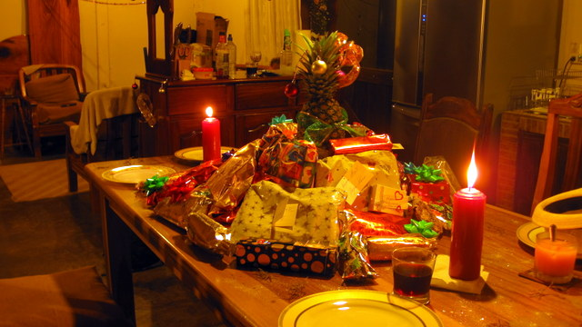
La table de Noël, avec l'ananas de Noël
On a mangé les feuilles de vigne reçues la veille par le colis de Noël en provenance de Belgique, tout en s'offrant les cadeaux qui s'entassaient au pied de l'ananas de Noël.
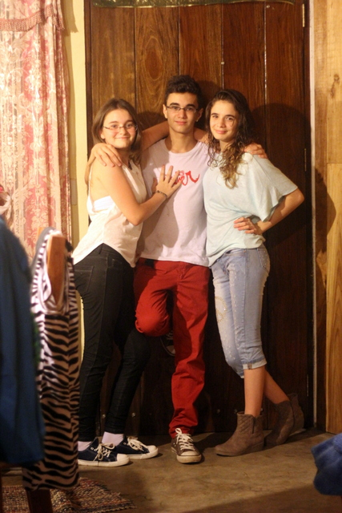
Les enfants posent
Sidney ayant reçu quelques explosifs, il nous proposa un somptueux feu d'artifice dans le jardin, précisément aux 9 coups de minuit, avant de se battre pendant 2h avec ses lentilles 'yeux jaunes' qu'il ne parvint jamais à placer.
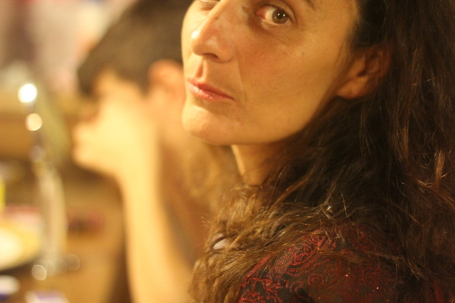
Cécile
Un peu plus tard, les filles improvisèrent un défilé avec toutes les parures accumulées au cours de la soirée. Comme d'habitude depuis 10 ans, nous terminâmes la soirée par un bon film, toujours le même et toujours aussi distrayant: Le Pôle Express.
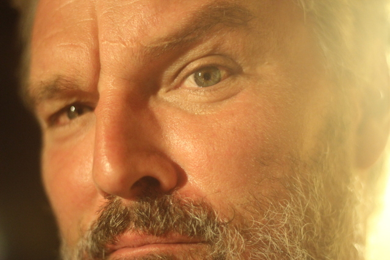
Eric est attentif
N'était la température un rien au dessus de la normale pour un mois de décembre, tout s'est déroulé comme prévu. Même le barbecue offert aux ouvriers du chantier se passa dans le calme et la bonne humeur.
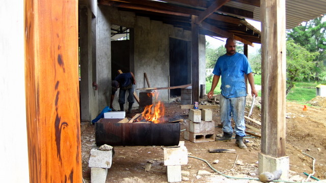
Repas de Noël sur le chantier
23/12/2014 - C'est presque Nowël
Quand vient la fin de l'année, à Bijagua, il faut alors préparer, peut-être pour toujours, des Tamales et les offrir (à chanter sur l'air de "Quand vient la fin de l'été, sur la plage..."). Certes mais que sont donc ces fameux Tamales? Eh bien, dorénavant, et désormais, Cécile en connaît tous les secrets. Il s'agit de 'beignets' de feuilles de bananier, farcis de riz, farine, légumes et porc, que l'on cuit et recuit dans une grande marmite sur un bon feu de bois. On en réalise une bonne pelletée afin d'en disposer en grand nombre pour pouvoir les offrir à tous les voisins. En général, la confection des Tamales commence par le sacrifice du cochon qu'on a engraissé pendant toute l'année et se termine par une grande fête familiale. Le tout se déroule sur plusieurs jours. Et les Tamales sont très goutus.
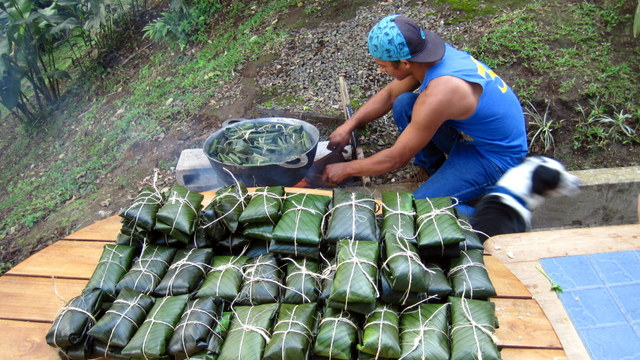
Les Tamales
Cette année, à l'approche de Noël, non seulement confectionna-t-on de nombreux Tamales, mais l'on en profita également pour célébrer en grande pompe l'anniversaire de Cécile. Ce n'est pas parce que l'on vit au bout du monde que l'on doit oublier les événements importants.
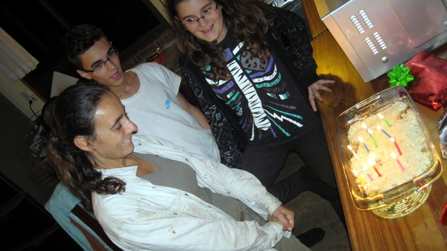
Cécile souffle ses 37 bougies
Couvertes de cadeaux somptueux, Cécile s'en fut par monts et par vaux à la recherche de galettes de bois. En effet, le premier Ikea étant franchement hors d'atteinte, nous avons décidé de décorer nos appartements à la rustique. Plutôt que d'acquérir une table 'made in Indonesia', nous avons opté pour un tronçon de Nispero Zapotillo. Alors que nous allions chercher des poulets au diable vauvert, chez William, nous avons constaté que ce dernier disposait d'une fort belle souche dans son jardin, dont il n'avait l'usage.
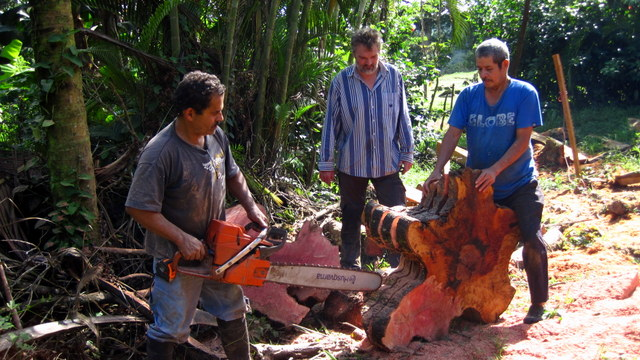
Pas d'Ikea, on décore à la tronçonneuse
Grâce à Javier, alias Chiqui, nous disposons maintenant de 4 belles tranches d'arbre que nous allons convertir en tables d'extérieur. C'est fantastique. En outre, c'est quand même plus sympathique d'aller découper du bois dans un jardin que de faire la file dans un magasin bondé où tout le monde achète la même chose.
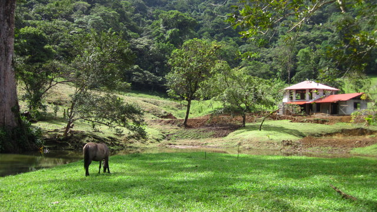
Vanilla broute au bord du lac
Nous avons également trouvé un bon plan pour tondre nos (très nombreuses) pelouses en attachant les chevaux à un piquet (chacun le sien). On déplace le piquet de temps en temps et les chevaux tondent avec une régularité quasi mécanique. En plus, ils répandent concomitamment de l'engrais pour assurer une repousse optimale. C'est beau la vie en accord avec la nature...
14/12/2014 - Le point sur la construction
Lors de notre dernière visite en Belgique, je me rappelle que nous annoncions à nos auditeurs ébahis que entamerions la construction de notre nouvelle maison en juin et que nous y rentrerions pour la fin de l'année. C'est effectivement le cas: nous pouvons entrer et sortir à notre bon gré. Pour ce qui est d'y habiter, il nous faudra un peu de patience. En effet, il manque une partie du toit, les cloisons intérieures, les fenêtres, l'électricité, la plomberie, les sols et la finition. Et le mobilier, évidemment. Il serait plus simple de préciser ce qui existe déjà...
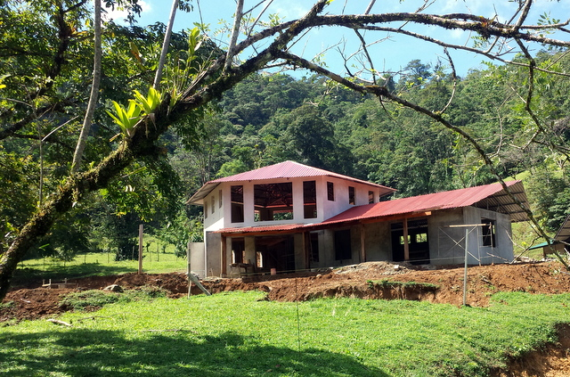
Notre maison dans les bois
Pas de surprise donc, ici comme ailleurs, la construction (et surtout la définition des échéances) n'est pas encore une science exacte. Pour ceux qui suivent, il y a 3 semaines, le bois du faux plafond de l'hexagone était venu à manquer en pleine action. Après un parcours épique, notre entrepreneur est enfin parvenu à obtenir les quelques mètres carrés de lambris qui nous manquaient. Comme par magie, le même jour, sont arrivés de la scierie le parquet de notre chambre et le lambris en teck de la terrasse couverte.
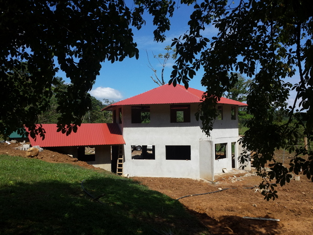
Notre maison dans la prairie
C'est bien simple, notre bodega et notre garage, que l'on pensait pourtant surdimensionnés, sont remplis de bois. On y trouve les planchers (y compris celui des chalets pour les invités), la structure de la terrasse couverte, les poutres pour la finition de l'entresol et ma réserve personnelle de tout ce que j'ai pu glaner à la scierie (car quand on coupe des troncs, il y a pas mal de pertes que l'on peut récupérer afin d'en faire de l'artisanat, des petits meubles et d'autres choses à déterminer).
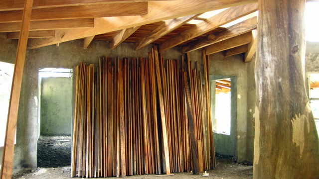
Le plancher du premier sèche dans le futur salon
Grâce à mes activités de récupération, j'ai un petit stock de 'déchets' de bois précieux que je compte bien mettre à profit. C'est déjà le cas d'ailleurs depuis que j'ai rencontré Naldo, le tourneur du coin. Il m'a déjà fait des bols, des coupes, un pilon, etc. Nous avons aussi réalisé un lave-main avec une chute de Guapinol.
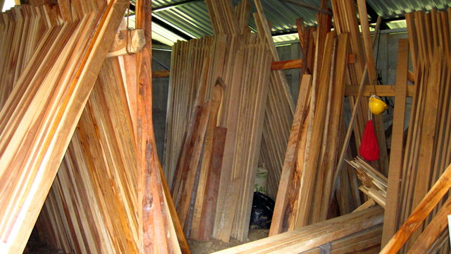
A gauche, le plancher de notre chambre, au centre, le plancher de la terrasse et à droite celui de la maisonnette
Dans le même genre d'idée, on fait réaliser la plupart de nos meubles par des menuisiers locaux dans des essences moins nobles. On utilise principalement du Cedros dont une grande partie vient de la finca (nous avions coupé 3 arbres morts en avril dernier). On utilise aussi du Laurel et de la Melina qui sont des bois locaux, l'équivalent de notre hêtre ou de notre sapin, en terme d'abondance et de qualité. A l'heure où j'écris ces lignes, nous avons déjà un lit et l'îlot central de notre cuisine. Nous avons également 20 chaises en Cedros dans lesquelles j'ai demandé que l'ébéniste insère des morceaux de Guapinol récupérés lors de la coupe à la scierie. Il ne nous reste plus qu'à faire réaliser 8 lits, 23 étagères, 4 armoires, un bar, 5 meubles de salle de bain, 5 tables et 9 tables de chevet et l'on peut passer à autre chose!.
6/12/2014 - Réussite
Lundi matin, Cécile s'est rendue à l'école afin d'obtenir les résultats des enfants. Elle a reçu les documents et est rentrée sans les regarder. Arrivée, elle s'est assise avec les 3 enfants autour de la table afin de commencer 'la distribution des résultats' comme on fait 'la distribution des cadeaux' à Noël chez nous... Un résultat pour toi, un résultat pour toi... Une mise en scène orchestrée de main de maître par Cécile pour faire durer le suspens et garantir l'inoubliabilité du moment.
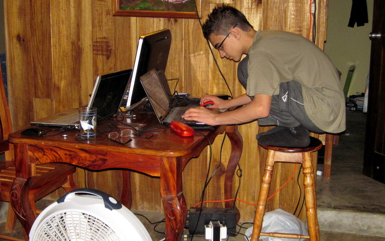
Sidney travaille dur
Certes, certes mais les résultats? Eh bien les enfants ont très bien réussi même si Syr Daria a éprouvé quelques difficultés dans la langue de Cervantes. Au final, cela donne Kenya 92%, Sidney 91% et Syr Daria 81%. Et hop! nos enfants peuvent désormais fréquenter officiellement le collège dès l'année prochaine, au moins en 7ème. Reste à réussir les examens de 7ème et de 8ème en février et ils auront retrouvé leur classe de Belgique... Félicitations donc à toute l'équipe, coachée admirablement par Cécile.
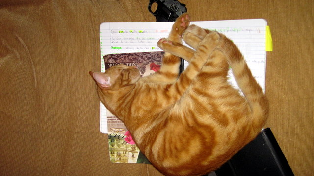
Civi étudie avec application
Et moi, que faisais-je pendant ce temps, à part rien? Eh bien je tentais de faire passer un autre examen: celui de notre véhicule au contrôle technique. Là aussi, l'épreuve fut couronnée de succès, à notre grand soulagement. Notre vaillant Land Cruiser de bourges (et de 1997!) est passé sans aucune restriction (sans doute grâce à Miguel, le garagiste, qui s'est occupé de tout). On est bon pour un an!
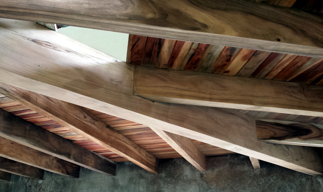
Le plafond en cours de fection
Quant au chantier, la pose du faux plafond de l'hexagone central, entamée dans la bonne humeur générale (travailler au sec, c'est quand même un confort indéniable) s'est terminée dans la consternation, si pas générale, au moins individuelle. En effet, au 3/4 du travail, le bois vint à manquer... L'entrepreneur s'est trompé sur la quantité. Et comme ce bois ne se trouve que sur pied, il va nous falloir au moins 3 semaines pour en obtenir (et recommencer tous le processus: coupe sur site, transport à la scierie, découpe en planches, sprouïtage, rabotage, rainurage, transport au chantier, ponçage et enduisage). Heureusement qu'il y a d'autres choses à faire en attendant!
29/11/2014 - Fin d'année scolaire
L'année scolaire arrivant à son terme, l'heure des examens a sonné. Le parcours scolaire des enfants (et de la maman) se poursuivait cette semaine par un saut d'obstacle impressionnant. En effet, afin de pouvoir fréquenter le collège dès l'année prochaine, les enfants devaient réussir 4 examens de... primaire. Cette session a été organisée spécialement pour eux grâce aux efforts soutenus de Cécile et son siège quasi-permanent de l'école, finalement couronné de succès. Quant à savoir si les examens seront, eux aussi, couronnés de succès, nous ne le saurons que lundi...
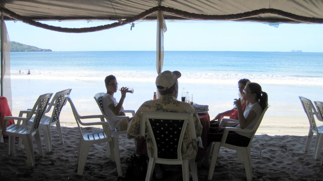
Brasilito, petite plage sympathique et déserte en ce samedi d'hiver
Certains, comme moi, s'étonnent du grand cas que font les enfants de ces contrôles, somme toute assez rudimentaires. Il faut quand même savoir qu'outre les mathématiques et les sciences, matières universelles (par définition, si ce n'est par essence, mais c'est un autre débat) et donc maîtrisées par nos padawans, il y avait aussi au programme sociales (histoire/géo) et espagnol. Et là, il faut reconnaître que les choses se corsent... Qui fut le premier président du Costa Rica? Hein? Et de quand date la dernière constitution? Et comment s'appellent les 7 provinces du Costa Rica? Bref, les enfants ont bien travaillé (et Cécile aussi qui a maintenu une discipline de fer durant les dernières semaines)!
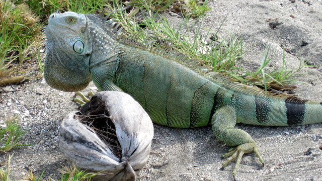
Comme aux Galapagos!
Sans attendre le résultat, nous sommes allés célébrer la réussite à la plage. De fin novembre à mi-janvier, il pleut VRAIMENT beaucoup à Bijagua alors qu'à 100 km, il fait grand soleil, grande chaleur et grande eau bleue. On s'est engouffré dans le Land et, à 10 km de Bijagua, juste passé le col entre le Miravalles et le Tenorio, les nuages ont disparu et nous avons foncé vers Tamarindo en plein cagnard. Nous nous sommes arrêtés à playa Brasilito pour déjeuner les pieds dans l'eau. Ensuite, nous avons joué dans les petits rouleaux d'une eau anormalement chaude pour un 29 novembre.
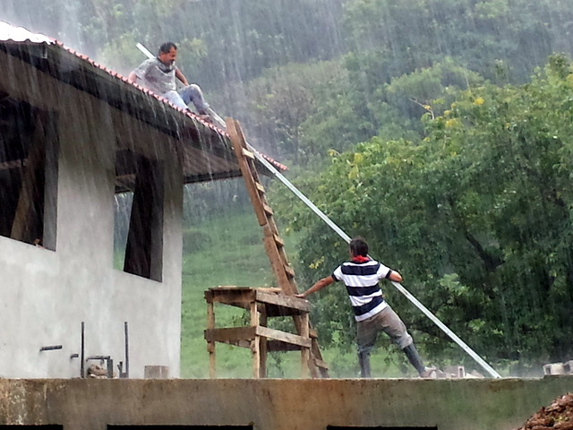
Le couvreur s'est fait surprendre par une ondée... Il a 30 sec. pour descendre de lui-même, ou il descendra contre lui-même sur le zinc ultraglissant!
Bien que Tamarindo, sur la côte Pacifique, et Bijagua, dans les montagnes, soient tous deux situés au Costa Rica, c'est sans doute leur seul point commun. A Tamarindo s'égaie une population de surfeurs presqu'aussi blancs que moi, qui déambulent dans les rues, en maillot, au sein de magasins plutôt chics pour le Costa Rica (on peut même y trouver du savon liquide ou des feuilles de vigne et même du steak à 30$ le kilo, c'est dire). La plage s'étire bien lisse et les rouleaux d'eau à 28°C se fracassent à intervalle régulier. Bref, pour des cul-terreux comme nous, Tamarindo, c'est les vacances à 2h de route, comme Knokke pour les Bruxellois, mais en plus chaud...
22/11/2014 - Le toit est placé
Malgré un mois de novembre bien arrosé, la construction avance. Les ouvriers ont réussi à profiter de chaque accalmie pour disposer le zinc du toit en jouant aux funambules sur la structure métallique. Cécile et moi n'osions nous rendre sur le chantier par peur de voir l'un de ces gaillards glisser sur le métal humide et s'empaler 7m plus bas sur une tige acérée ou se disploquer sur une poutre bien massive.
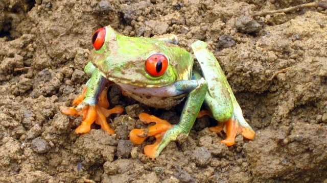
Une grenouille multicolore est venue pondre dans nos futures tranchées d'évacuation
Mais non, personne n'a été ni tué ni blessé et il ne manque que les faîtières pour que le toit soit étanche. Ensuite, on pourra dérouler: entresol, faux plafonds et, en un tournemain, l'intérieur de notre palais ressemblera à un intérieur de palais. On pourra passer au deck (la terrasse couverte) et à l'aile privée. Christian, l'entrepreneur, est formel: nous entrerons dans notre demeure à la mi février... dans 12 semaines. Je reste perplexe, au vu des problèmes que nous avons rencontrés jusqu'ici.
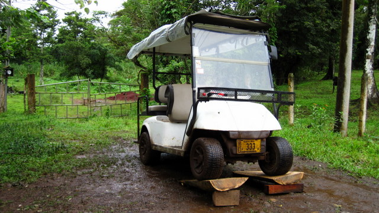
Mon atelier de réparation
En parlant d'ennui, notre voiturette électrique a rendu l'âme récemment, soupirant par à-coup jusqu'à agoniser pour de bon. Je l'ai placée sur la table d'opération et lui ai déballé les organes internes avant de lui pratiquer les électro-chocs. Cela m'a permis, au bout de quelques heures de chipotage et 225 jurons, de découvrir un fil corrodé (merci les 5 ans de bateau) et de le nettoyer. Picapiedra (c'est le nom de la voiturette) est repartie sur des chapeaux de roues.
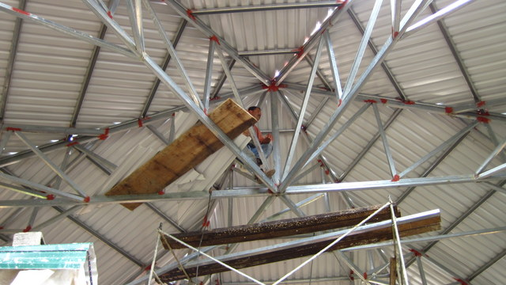
La structure métallique du toit, à toute épreuve!
Par contre, l'ordinateur flambant neuf que je venais de recevoir des US est mort pour de bon. Il aura tenu 2 mois. Le disque dur est naze, d'après l'auto-test, conclusion que je réfute, ayant réussi à récupérer toutes les données dudit disque. Mais rien à faire, l'ordinateur ne démarre plus sous Windows. Evidemment, il est sous garantie. Je n'ai qu'à le renvoyer à Amazon aux US pour en recevoir un nouveau. Reste à trouver un moyen de le leur renvoyer sans que cela ne me coûte le prix d'un PC...
14/11/2014 - Premiers visiteurs
S'il est vrai que nous avons déjà eu la visite de Ingrid et Pirlouit au mois de février et de Roland et sa famille en juillet, nous étions, en ces temps reculés, loins de pouvoir offrir ne fut-ce qu'un avant-goût de nos futures prestations par manque de moyens. Cette fois, nous avons pu proposer à Wim et sa compagne, d'anciens collègues de Cécile, une visite guidée de nos futures attractions.
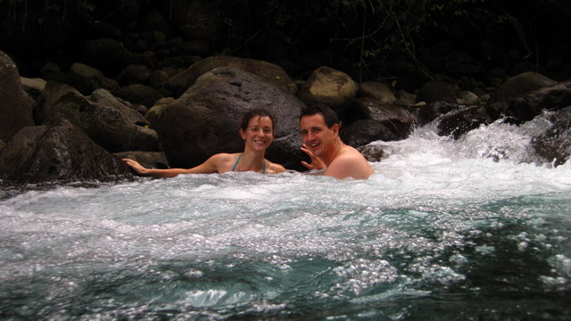
Nos invités apprécient les bulles naturelles du Rio Zapote
Outre le site de construction (qui ressemble en ce moment à Verdun, en 1917), nos amis ont été les premiers à parcourir le sentier en forêt fraîchement tracé. On a même poussé jusqu'aux confins de la propriété, nous frayant un passage dans le bosque à grands coups de machette, afin d'accéder au joyau de la finca: le tumultueux Rio Zapote et ses jacuzzi rafraîchissants. On aurait bien fait un tour dans les champs de cacao, flâné dans le jardin botanique ou pêché l'un ou l'autre poisson dans le l'étang mais les plantes sont encore un peu petites et les poissons encore un peu absents.
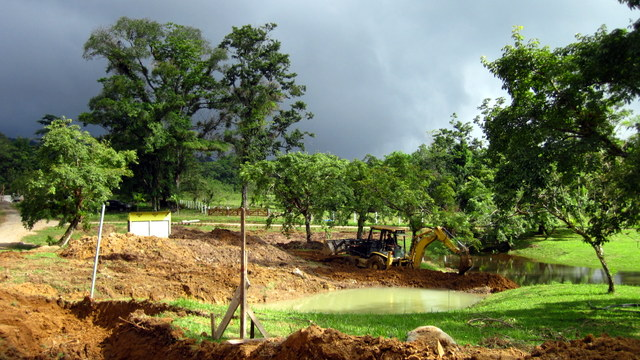
Les travaux de terrassement se poursuivent
Concernant la construction, profitant d'un ensoleillement exceptionnel de près de 5 jours d'affilée, nous avons dragué les marais alentours, afin de créer de petits étangs. Cette entreprise fort coûteuse s'est révélée un rien salissante mais, dans quelques mois, il n'y paraîtra plus, la végétation aura recouvert les traces de chenille et nous jouirons d'une vue spectaculaire de pelouses fleuries entrecoupées d'étendues d'eau en cascade. Ca va être génial.
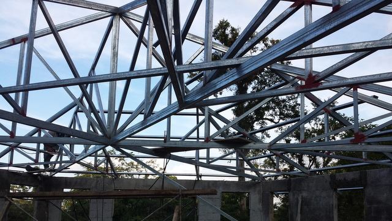
La structure métallique du toit, à toute épreuve!
Si tout se passe bien, on pourra placer le toit la semaine prochaine, ce qui permettra aux ouvriers de travailler au sec, même quand il pleut, ce qui va accélérer le chantier. La construction de la première maisonnette d'hôte a également débuté sans compter les premiers coups de pioche pour la piscine. Bref, tout avance. Même la tranchée pour le drainage des eaux usées a déjà été creusée. Elle s'est remplie d'eau résurgente, provenant des tréfonds de la terre... Mauvaise nouvelle qui va nous obliger à faire preuve d'imagination...
8/11/2014 - Bichitos
Dans le dernier billet, je parlais d'un orage qui s'abattait sur la finca. Ce que j'ignorais, c'est que la pluie tomberait sans discontinuer pendant 5 jours. C'est une spécialité du coin. Difficile à croire mais, depuis que nous sommes ici, c'est arrivé 3 fois. La pluie se met à tomber et perdure pendant 5, 7 ou 12 jours. Et quand je dis pluie, je veux dire averses et non crachin. Il tombe des cordes. Naturellement, durant cet épisode, le chantier est à l'arrêt. Impossible de faire quoi que ce soit. Même s'y rendre devient mission impossible tant la boue est omniprésente.
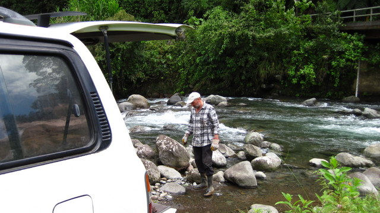
Je vais au Rio, de Janeiro, euh non, pour collecter des pierres
Tout cela ne nous a pas empêché de construire le petit canal d'évacuation de notre lagon. En effet, nous avons décidé de terminer le travail en élevant de quelques dizaines de centimètres supplémentaires le niveau des eaux. Avant de boucher l'évacuation actuelle, nous avons préparé le nouveau plan d'écoulement. A cette fin, nous avons collecté des pierres dans le lit du Rio Zapote avant de les disposer dans la tranchée. Félix y a ensuite coulé un peu de ciment pour bien ancrer le tout. A l'heure ou j'écris ces lignes, le niveau monte lentement...
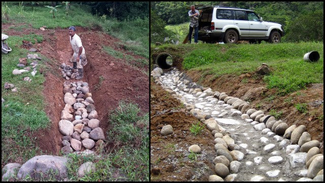
Et voila notre Chaussée Romaine
Dans l'avant-dernier billet, j'expliquais la difficulté que nous éprouvions à obtenir du bois pour les sols. De fait, ça ne s'arrange pas. Après des semaines de tergiversations pour cause de scierie pas prête, le grand jour était enfin arrivé: les troncs de Ron Ron pouvaient être découpés. J'étais excité comme un coucou à l'idée de découvrir la finesse de ce bois que je réservais spécialement pour notre chambre. En effet, il s'agissait de découper des branches (et non des troncs, comme d'habitude) dont je pensais exploiter le bois à la fibre tourmentée. En outre, ici, les branches ne valent pratiquement rien et j'avais donc réussi à les négocier un bon prix.
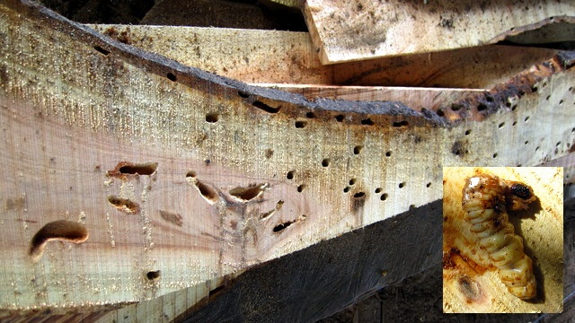
Le bois perforé et le perforateur
Quelle déconfiture! Le bois étant resté trop longtemps à l'abandon devant la scierie, il a été littéralement dévoré par les bichitos (les bêbêtes). Le résultat est impressionnant: les planches sont perforées... Esthétiquement, c'est innovant, mais pour en faire un parquet, c'est pas gagné. Certes, l'aération est intégrée mais peut-on réellement imaginer un sol gruyerisant se remplissant de saleté? Je ne sais pas. Et sinon, que faire de ce bois? Vue la somme que j'ai déboursée pour l'acheter et le couper, je préférerais le manger, tel un bichito, plutôt que le jeter à la poubelle. Aux dernières nouvelles, il parait qu'on pourrait en faire des meubles originaux, éclairés de l'intérieur, ce qui donnerait un aspect particulièrement cosy grâce aux trous...
30/10/2014 - Histoire d'eau
Notre finca est en fait une colline d'une centaine de mètres de haut adossée au Rio Zapote. Le versant Sud est couvert d'une épaisse forêt vierge parcourue par 2 gros ruisseaux. Du coté Nord, où nous avons construit la maison, se trouvent de nombreuses sources ou résurgences d'où jaillissent des rus dont le débit est directement lié à la quantité de pluie qui tombe.
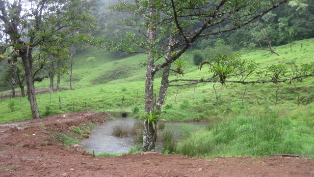
Avant, on avait une lagunita un peu moche, surtout sous la pluie
Nous avons érigé un barrage sur l'un des ruisseaux de sorte à former une lagune de près d'un hectare. Nous avons également réalisé un petit barrage avec les remblais de terrassement de la maison, afin de former une lagunita au pied de notre terrasse. Nous n'avions pas enlevé les herbes avant de faire monter l'eau de 50 cm, ce qui conférait aux lieux des airs de marecage...
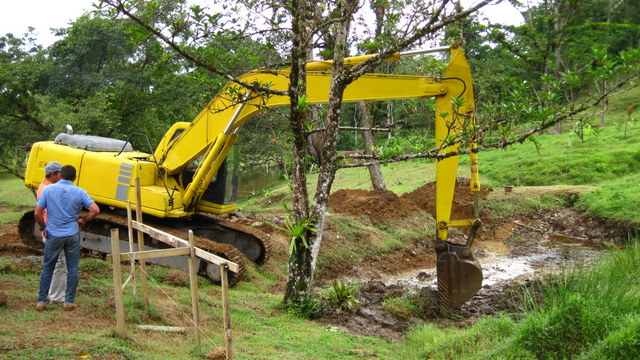
Puis, la pelleteuse est arrivée
Aujourd'hui, la pelleteuse venait pour creuser le trou de la piscine et nous en avons profité pour draguer le fond de cette lagunita afin d'en chasser les herbes. L'idée était d'obtenir une sorte d'étang de petite taille mais sans verdure au milieu. Cette entreprise louable s'est révélée plus difficile que prévue, la pelleteuse s'enfonçant inexorablement dans le sol meuble de la lagune.
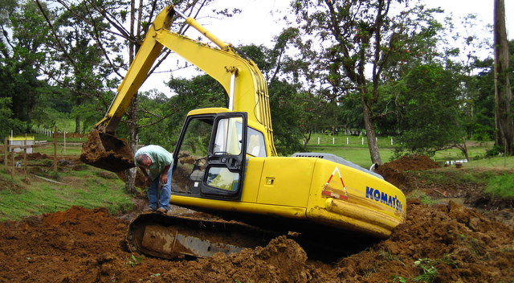
La pelleteuse s'est embourbée sous le regard incrédule de son pilote
Malgré un apport massif de terre fraîche excavée des alentours de la maison, rien n'y a fait, le sol n'a jamais pu soutenir le poids de la machine. Vers 15h un orage diluvien s'est abattu sur la finca, rendant impossible la poursuite des opérations. Nous avons maintenant une lagunita à moitie creusée et un terre-plein à moitie mou. Gageons toutefois que lors du prochain épisode estival, ces travaux de terrassement verront leur terme et notre nouvelle lagunita exempte de végétation (et remplie) fera pâlir d'envie les nombreux visiteurs, surtout si l'on arrive à y disposer un tapis de pierres afin de garder une eau limpide.
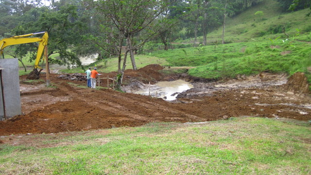
Et voilà, toujours aussi moche mais c'est dû au manque de lumière pour la photo
28/10/2014 - Semaine culturelle à Bijagua
Chaque année, en octobre, Bijagua organise une semaine de festivité à connotation culturelle. On peut y découvrir des danseurs venus de tous le pays. Leurs déhanchements lascifs sur des bacchatas endiablées sont évidemment l'oeuvre du Malin et ne peuvent être tolérés qu'à dose homéopathique dans le cadre de festival, afin de montrer à la jeune génération l'état de déliquescence avancé de la précédente.
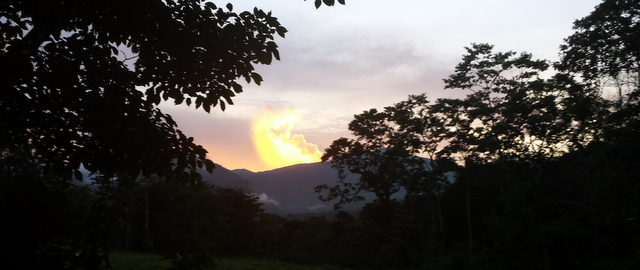
Le Miravalles à la tombée du jour
Tandis que le Miravalles semblait se réveiller après une longue torpeur, nous avons rejoint le centre culturel du village afin d'assister au concours de la plus belle robe en maïs (après, on en a fait du pop corn). Le lendemain, nous avons assisté au défilé des fanfares communales des bourgs voisins et je dois dire que si la performance musicale laisse parfois à désirer, on peut toujours se satisfaire de la vue de ces jeunes filles qui se dandinent sur des airs de trompette. C'est très sympathique et parfois un peu surréaliste.
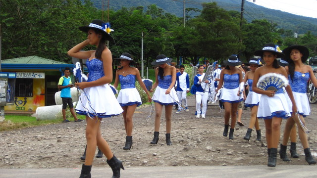
J'aime les fanfaronnes
Comme l'été se poursuit (une seule pluie cette semaine, incroyable), le chantier progresse bien. Les premières poutres du toit on été placées et les fondations de la première maisonnette ont été jetées. Si tout se passe comme prévu, on devrait pouvoir entamer l'électricité et la plomberie sous peu.
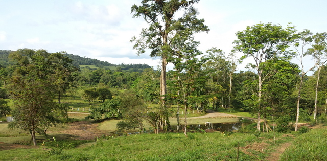
Notre lagune baignée de soleil
Toutefois, il reste un point noir: le bois. Notre combat pour obtenir un plancher en Tamarindo tourne à la guérilla. Dans un premier temps, l'arbre qui devait nous fournir le bois s'est révélé creux. Dans un deuxième temps, les lattes que nous avions dégotées à San Outsiplos Los Banos de Pies (du bois sec, pour une fois) ont été vendues sous notre nez. Dans un troisième temps, alors qu'enfin nous avions réussi à trouver, couper, débiter et faire livrer un bel arbre, la scierie qui devait en faire des planches nous l'a massacré.
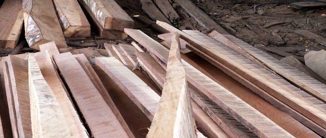
Notre plancher post-moderne
Je ne sais pas comment ils ont réussi cet exploit mais il ont coupé les planches en ondulant. Il n'y a qu'à voir la photo ci-dessus, c'est édifiant, et stupéfiant. Quand je pense qu'il reste encore à obtenir du Ojoche pour le plancher de la maisonnette et un peu de Ron Ron pour notre salle de bain, je souffle déjà comme un cachalot. Dans la prochaine maison, c'est sûr, je mettrai du Quick Step.
23/10/2014 - Ca monte, ca monte
Alors que le deuil de ma débroussailleuse s'achève, les travaux se poursuivent dans tous les coins de la finca. Près d'un kilomètre de sentiers pédestres ont déjà été tracés dans la foret et même s'il manque quelques marches par-ci par-là et 2 ou 3 ponts deci delà, la ballade parmi les arbres mérite déjà les efforts qu'elle requiert.
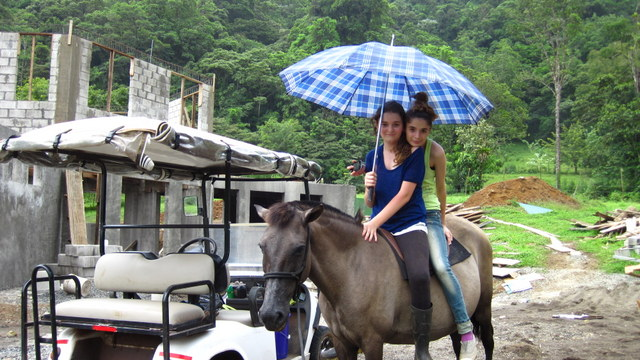
Montons sous la pluie
En ce qui concerne le cacao, les 1000 plants suivants sont arrivés cette semaine et leur mise en terre a démarré dans l'allégresse générale, alors même que les 1000 premiers croissent en silence, dans l'attente de leur greffe prochaine. Les chevaux se sont habitues à leur nouveau pâturage et même, curieusement, à leurs nouveaux cavaliers ou, devrais-je dire, damoiselles...
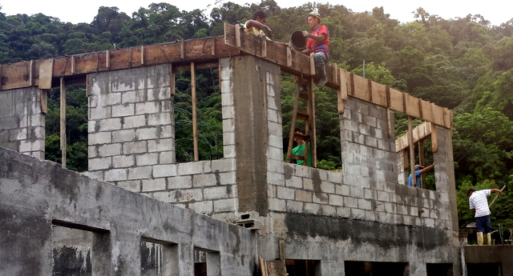
Coulage de la Viga Corona
Quant au chantier, inutile de préciser que l'ascension se poursuit, malgré quelques contretemps comme le vol dont je vous parlais la semaine passée ou la pluie un rien capricieuse ces derniers temps. Justement, nous avions habilement entamé la mise en peinture de la chambre froide (enfin l'extérieur dont nous souhaitions assurer l'imperméabilité) mais le produit utilisé s'est avéré peu résistant à... la pluie. Résultat: notre peinture s'est retrouvée dans le caniveau en moins d'une heure. La deuxième tentative résista une heure avant qu'il ne re-pleuve. Djeuuuuuuuu. Heureusement, la troisième couche a séché entre deux averses.
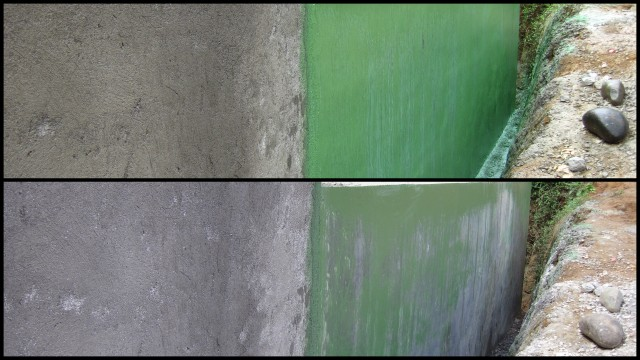
La peinture avant et après la pluie
Mais tout cela n'est que détail en regard de la véritable avancée de la semaine: nous avons obtenu une date pour l'examen des enfants. Pour ceux qui ne lisent pas les autres rubriques du site (Voir Jour après jour), les enfants doivent passer un examen de fin de primaire afin de pouvoir s'inscrire officiellement au collège. Après 2 mois de négociations, nous avons enfin obtenu que l'école l'organise et nous en communique le contenu. Pour la première fois de leur vie, les enfants vont passer un contrôle officiel. C'est dire s'il règne en ce moment à la maison une atmosphère studieuse, surtout qu'un échec serait durement ressenti tant parce que la matière est supposée connue depuis bien longtemps que parce que la réputation de la Belgique est en jeu. Verdict début décembre.
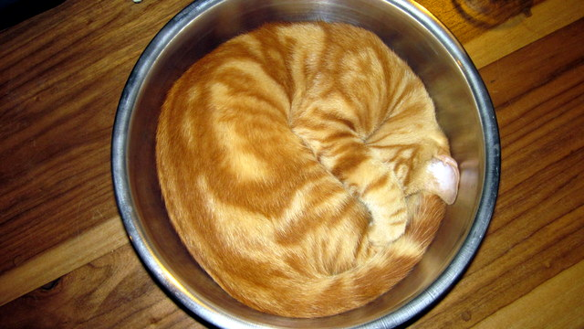
Civi a trouvé un bon plan pour dormir
11/10/2014 - Bande de salopards
Il n'y a pas d'autres mots pour qualifier les bandits qui se sont introduits dans la propriété durant la nuit de samedi à dimanche. Ils ont fracturé la porte pourtant bien fermée menant à la chambre froide (transformée en chambre forte pendant la durée du chantier) avant de fuir les bras chargés des outils du chantier. Heureusement, ils n'ont pris que le rabot et la ponceuse, laissant le poste à souder et la bétonnière... Rien de bien grave (surtout que ces outils appartiennent à Christian, l'entrepreneur, tant pis pour lui) et je n'aurais même pas mentionné cet incident s'ils n'avaient aussi pris MA débroussailleuse. Et là, on arrête de rigoler. Il s'agit d'un acte inqualifiable, inexcusable et crapuleux.
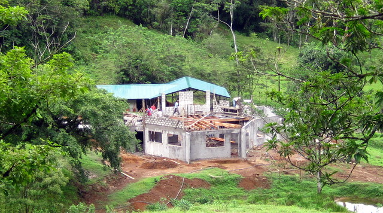
La construction se poursuit inexorablement
Dès qu'il a eu connaissance du délit, Christian s'est rendu à la police sans grand espoir selon ses propres dires. Ensuite, il a disparu avec son frère et on ne l'a plus vu de la journée. D'après moi, ils cherchent activement les coupables en fouinant à gauche à droite. Bijagua étant un petit village, les gredins qui ont eu l'audace de me voler seront bientôt démasqués et mis sous les verrous. Ou, plus probablement, ils seront tabassés à titre d'exemple. Mais de toute manière, ma débroussailleuse flambant neuve est désormais dans les mains d'un receleur et je vais devoir à nouveau débourser 600$ pour en acquérir une nouvelle.
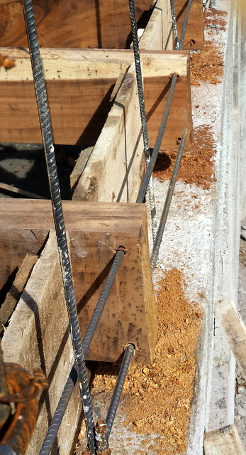
Et voila comment les poutres sont fixées au mur (on coule une poutre en béton par la suite)
Cela n'a pas empêché le chantier de se poursuivre par la construction du 2ème étage, étape capitale s'il en est puisque c'est précisément sur cette structure que viendra se placer le toit d'ici une dizaine de jours, ce qui permettra enfin de travailler au sec... Dans une région où il pleut 300 cm par an, ce n'est pas négligeable.
11/10/2014 - True Blood, saison XIII
Dans les films, les vampires ne sortent que la nuit pour sucer le sang de leurs innocentes victimes. On les combat avec des crucifix, de l'eau bénite et des gousses d'ail. Dans la vraie vie, les vampires existent bel et bien. Ce sont de petites chauve-souris de la taille d'un kiwi (également poilues). Pour preuve, chaque nuit, ils s'abreuvent du sang de nos chevaux et chaque matin, Cécile détecte les deux petits trous laissés par les canines de ces bestioles. Et chaque matin, j'asperge les chevaux d'eau bénite et leur plaque une croix en argent sur le front pour voir s'ils sont encore bien de notre monde ou s'ils vont brûler en enfer. On n'est jamais trop prudent... Ne manque que l'ail car je ne sais pas trop quoi en faire. Mais trêve de plaisanteries, le vétérinaire nous l'a confirmé: ces chauve-souris affaiblissent nos montures et leur transmettent des maladies.
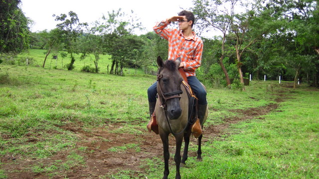
Sidney, l'homme de Del Monte
Aussi avons-nous décidé d'agir. Soit, mais que faire? Les suceurs de sang ne viennent que la nuit (tiens donc) et leur repaire est difficile à débusquer (sans doute une crypte à proximité). Demandant conseil aux paysans du cru, nous avons appris que le meilleur moyen de les tenir éloignés est d'enduire les zones sensibles de l'animal (le cou, en particulier) avec... de l'ail (ben voila à quoi il sert). En définitive, Hollywood n'a rien inventé. Ou alors, au Costa Rica, on vit dans un film.
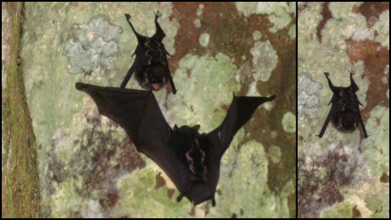
J'ai trouve le repère des vampires au creux d'un arbre
C'est comme la gestion du jardin. Dans la vraie vie, c'est beaucoup plus compliqué qu'il n'y parait. Non seulement il faut savoir faire des trous idoines aux endroits adéquats, gérer l'ombre et la lumière, tenir compte de l'humidité mais tout cela ne sont que jeux d'enfant pour amateurs. Lorsqu'on passe professionnel, finie l'approche cartésienne, place à l'empirisme. Figurez-vous qu'il faut toujours planter 3 jours avant la pleine lune (ou 3 jours après), sinon ça marche pas (ou pas bien). Il faut tailler à la lune montante et couper le bois à marée basse. Heureusement que les 5 années passées à naviguer m'ont permis d'acquérir des réflexes aiguisés en matière de lune et marée, sinon je passerais pour un rigolo parmi mes confrères finqueros.
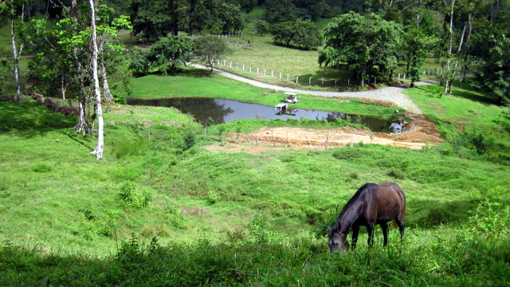
Les chevaux dans leur nouveau pâturage
Tout cela prête à sourire mais il faut être prudent. Par exemple, le bois coupé à marée haute se délite et s'étiole prématurément, c'est bien connu. Pour cette raison, l'entrepreneur était personnellement présent sur le lieu de coupe du bois de construction avec son almanach pour vérifier que la marée était bien basse. Quand on abat une dizaine d'arbres de bois précieux, il vaut mieux ne prendre aucun risque... Une question me taraude toutefois: combien de temps exactement dure la marée basse ?
08/10/2014 - Parole divine
Dans mon couple, comme dans bien d'autres, parole de femme est parole divine. Quand Cécile dit qu'elle verrait bien un portail en bois pour l'enclos des chevaux, inutile de tergiverser: il faut un portail en bois.
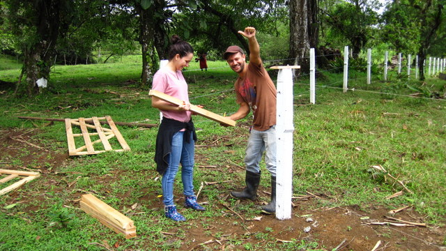
Yohan et Rebecca travaillent dans la bonne humeur
Le bois a fait une boucle complète: après avoir coupe l'arbre (mort) sur les pentes de la finca, débité les billes in situ à la tronçonneuse, transporté les bûches à la scierie pour en faire des planches, les avoir rabotées et apportées chez le menuisier pour l'assemblage, nous l'avons ramené ce matin à la finca. Yohan s'est occupé d'installer le portail.
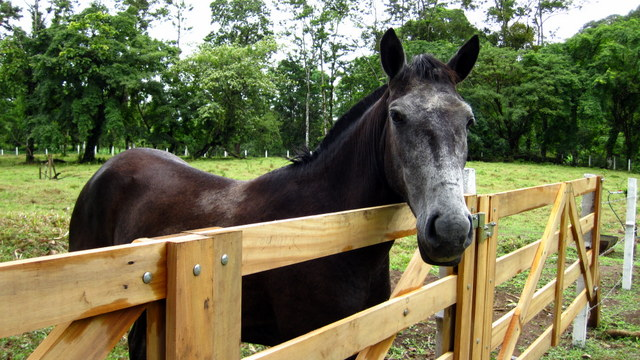
Et voila, Vanilla toute contente derrière son portail tout neuf
Alors que nous réparions la cabane des chevaux mise à mal lors d'une joute épique entre les deux juments (il semble que chez les équidés comme chez les humains, la réunion de deux représentantes du sexe féminin peut parfois tourner au vinaigre), nous avons vu arriver Marvin, alias Gavilan, le coffre chargé des Heliconias que nous lui avions commandés.
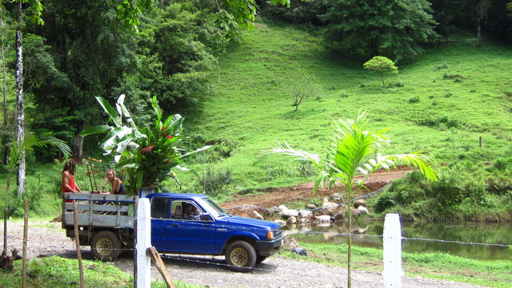
Arrivée des Heliconias (et des rastas pour les planter)
Il s'agit de décorer un peu la finca. En effet, les prairies et le bosque, c'est bien beau, mais ça manque un peu de couleur. On a donc commencé à planter des arbres fruitiers et des plantes ornementales. Bon, avec nos 40 hectares, va falloir un peu de patience mais on n'est pas obligé de tout décorer et il faut bien commencer quelque part, par exemple autour de la maison (enfin pas trop près, vu que la construction se poursuit). Bref, ce sont une quarantaine de ces plantes que nous avons mises en terre, toutes de la même famille mais toutes différentes. A terme, nous aurons des fleurs (celles dont on rêve en Europe) de toutes les couleurs, pour orner à la fois le jardin et les chambres des invités (ben, et la nôtre alors? on la décore pas?).
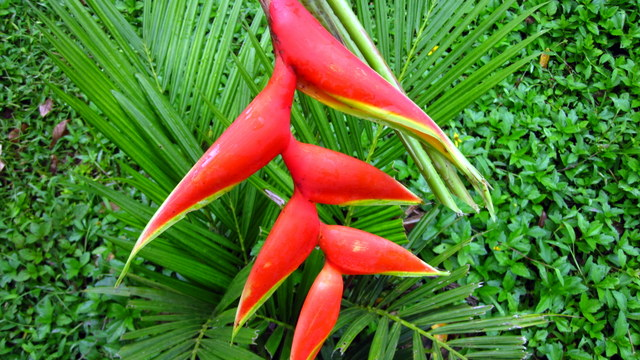
Une fleur d'heliconia
Et quid de la construction? Ça avance, ça avance. Pas trop vite car il nous manque 3 poutres de 4.5m de long pour terminer l'entresol. Elles devaient provenir d'un tronc de Guanacaste (un arbre local) qui nous a été confisqué sur le lieu de coupe pour paperasserie non conforme. Résultat: on cherche du Guanacaste 'légal' à un prix abordable depuis 2 semaines, ce qui est loin d'être évident, surtout quand ce sont des poutres d'une telle taille, dans ce pays ou le commerce du bois est très étroitement surveillé. En attendant, on prépare les trous et les coffrages pour les fondations de la terrasse.
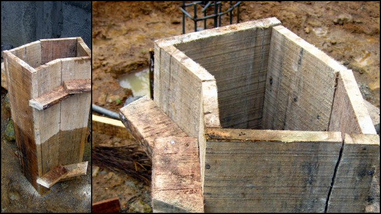
Mais qu'est-ce donc?
01/10/2014 - Zompopas
Depuis bientôt 2 mois, nos plants de cacao luttent âprement pour leur survie au sein d'un monde impitoyable. Leur pire ennemi, ce ne sont pas les mauvaises herbes qui les assaillent et croissent bien plus rapidement qu'eux (mais n'est-ce pas là une constante universelle qui veut que tout ce qui est indésirable pullule alors que l'objet de nos soins s'avère systématiquement chétif, à tel point que je me suis surpris à planter des mauvaises herbes dans l'espoir de voir pousser des tomates...), ce ne sont pas les conditions météo contraires (on n'a jamais vu ça, mon bon monsieur, une sécheresse pareille, c'est inouï), ce ne sont pas les sauterelles, ni la grêle mais bien les zompopas.
Avant/après
Les zompopas ne sont ni des vampires assoiffés de sang (ceux-là existent bel et bien sucent nos chevaux avec avidité chaque nuit), ni des félins à dents acérées mais simplement des fourmis 'coupeuses de feuilles'. En quelques heures, une meute de ces bestioles peut défeuiller un arbuste, chacune d'elle emportant un morceau de feuille jusqu'au nid, parfois distant de plusieurs dizaines de mètres. Certains citronniers sont même complètement dénudés en quelques jours lorsqu'une colonne de ces putains de fourmis les trouve sur son chemin... Bref, les zompopas sont notre ennemi juré et il n'est guère de journée qui passe sans que nous nous empoignons à grand coup de Myrex (c'est le nom du poison que nous répandons sur leurs autoroutes pour qu'ils l'emportent jusqu'au nid et provoque une mort atroce par ingestion à leurs congénères).
Roy quitte rarement son cheval (même pas besoin d'échelle)
Dans un autre registre, Cécile, mal à l'aise avec les équidés par manque de pratique, a fait appel à Roy pour l'aider à recouvrer ses réflexes d'antan et lui prodiguer quelques conseils en matière d'entretien et protection (pour moi, le cheval est la version pre-industrielle de la moto). C'est bien beau de monter ces canassons, encore faut-il savoir comment les protéger des vampires, les ferrer, leur ôter les parasites, leur tondre crinière et intérieur des oreilles, etc... Pour cela, Roy est un champion. Il vient 2 à 3 fois par semaines à la finca et est vraiment d'une aide appréciable (et j'aime bien ses bottes blanches en caoutchouc).
Et dire que je fais cela pour m'amuser...
En plus, Cécile a décidé qu'il fallait un portail pour sortir de l'enclos des chevaux. Résultat: Oscar, le bûcheron, est venu avec sa grande tronçonneuse pour transformer un Cirri mort en planches que Mosco, le menuisier, agencera en barrières, lorsque Eric, le sherpa, aura transporté le bois coupé jusqu'à son atelier (là je m'égare car j'ai porté cette rikiki planche pendant 50m pour faire la photo alors que Brian s'est farci 10 fois le trajet complet, soit 200m et 80m de dénivelé, avec les vraies planches, soit 80 kg, sur le dos - mais bon, il est payé, lui...).
27/09/2014 - Etoile
Alors que l'été s'achève doucement et que l'automne s'annonce, nous profitons des derniers rayons de soleil pour entasser le bois pour l'hiver. Ce matin, les premiers flocons sont tombés dans l'air diaphane et les... euh, non, en fait, on voit pas du tout la différence entre l'été et l'automne ici... Fait chaud. Et il pleut. Comme d'hab... Mais ça n'empêche pas les travaux d'avancer et, même vu d'en haut, notre lagon n'a pas l'air gelé...
Notre Lagunita vue d'en haut
Au niveau construction, cette semaine fut entièrement dédiée à la mise en place des poutres destinées à soutenir le premier étage. Chacune d'elles mesure 6m de long pour une section de 30 cm sur 12 et pèse 250 kg.
René prépare les encoches pour réceptionner les poutres
Il s'agit de les élever de quelques mètres puis de les insérer dans les encoches réalisées à la tronçonneuse(!) dans le pilier central. A force de pugnacité et de créativité, l'entreprise fut menée à bien et vendredi, à 16h, l'ossature de l'entresol se dressait au centre de l'hexagone...
Et voilà l'étoile
Un peu comme pour le tour de France où le suspens s'estompe lorsque le peloton a franchi les Alpes, il ne reste désormais qu'à dérouler, rien ne pouvant empêcher l'inéluctable surgissement de la maison de nos rêves.
21/09/2014 - Im Westen nichts Neues
Ce week-end, alors que nous profitions de l'absence des ouvriers pour vérifier la qualité de leur travail, nous avons fait la connaissance d'Ursule La Libellule.

Une libellule
Nos divers projets progressent bien: la dalle de béton est coulée sur la chambre froide, le restant du bois en provenance de la finca a été tronçonné et est prêt pour passer à la scierie, l'enquête de Cécile pour trouver les plantes les plus adéquates pour peupler notre futur jardin arrive à son terme, notre parquet est revenu de la machine à raboter, le cacao pousse au fond des champs, nos meubles prennent forme sous la main de Mosco, l'ébéniste, les sentiers s'allongent chaque jour et les chevaux sont presque exempts de tiques et autres parasites grâce à l'action quotidienne de Cécile.
Un parterre coloré
Bref, tout va bien. Un seul petit détail nous taraude encore l'esprit: l'école menace de ne plus accueillir nos enfants sous prétexte qu'ils n'ont pas d'antécédents scolaires. Il faut dire que nous n'avons aucun document officiel d'aucune sorte à faire valoir, nos enfants n'ayant jamais conclu le moindre cycle scolaire dans un établissement quelconque. Apres de longues discussions avec le directeur et les autorités régionales de l'enseignement, nous avons trouvé un arrangement: les enfants passeront tous un examen (en chaque matière) en fin d'année afin de valider leur niveau et de leur permettre de régulariser leur situation. Pour l'instant, le directeur est d'accord de leur faire passer un examen afin de les faire entrer en... première secondaire (pour autant qu'ils réussissent). Parfait pour Syr Daria, pas glop pour Kenya qui aura presque 16 ans. Ca fait 8 semaines qu'on négocie avec les autorités pour obtenir un compromis plus acceptable, surtout que, faut quand même pas déconner, le niveau moyen reste euh... disons, moyen. On aimerait bien le démontrer sur le champ, en faisant participer les enfants aux contrôles réguliers, encore faut-il qu'ils comprennent les questions, ce qui implique une bonne maîtrise de la langue de Cervantes. Heureusement, là aussi, on fait tous de gros progrès... Question de temps !
17/09/2014 - Une belle érection
Un peu laborieuse mais, il faut bien le dire, impressionnante!
Le tronc arrive
Pas de méprise, ni de propos graveleux sur ce site, il s'agit évidemment de la mise en position verticale du pilier central de notre future demeure. Ce pilier issu d'un Ron Ron de belle taille mesure près de 4m de haut pour un diamètre de 60 à 70 cm. Autant dire qu'il est lourd, environ 2T selon mes plus récents calculs, les précédents étant faux, pour ceux qui suivent assidûment nos aventures.
On le traîne jusqu'au trou
Pour placer un tel objet au centre du salon, rien de plus simple: on fait venir une grue et on va boire une bière. Quand on n'a pas de grue, ni aucun engin motorisé, les choses se compliquent un peu... Faut la jouer Rapa Nui.
On l'enchaîne
Premièrement, il faut traîner le tronc jusqu'au centre de la pièce, après l'avoir martelé pendant quelques heures pour en faire tomber l'écorce. Déjà, cette petite mise en jambes requiert quelque talent. Mais grâce a l'opiniâtreté des muchachos, il n'a fallu que 2 heures pour placer la base du pilier au-dessus du trou (au fond duquel on avait préalablement versé une dalle de béton armé de 20 cm d'épaisseur).
On treuille
Ensuite, on érige un échafaudage de fortune fait d'une poutre métallique soutenue par des tiges d'armature soudées aux 4 coins de l'hexagone (oui, oui, on est très forts...). On fixe ensuite au sommet de la poutre un treuil relié au tronc par une chaîne. Un muchacho grimpe et actionne le treuil. Chaque aller-retour de manivelle fait avancer la chaine d'un quart de maillon.
On le met bien au centre (c'est le point de rencontre des fils)
Le tronc s'élève lentement et commence a tournoyer, raison pour laquelle on l'amarre. Une fois placé en position verticale, ce qui prend environ 3h, on le positionne exactement au centre de la pièce en se basant sur les guides et on coule un demi mètre cube de béton dans le trou, après avoir enduit la base du tronc de goudron bien gluant.
Et voila! Un pilier qui durera 250 ans!
Et c'est fait: le pilier central trône, sublime, droit comme un i, au centre de la pièce. Y a plus qu'à placer les 6 poutres de 250 kg chacune et on pourra entamer la construction du deuxième etage...
15/09/2014 - Fête nationale
Au Costa Rica, le 21 juillet tombe le 15 septembre. Aujourd'hui donc. C'est la fête nationale!! De manière originale, des défilés sont organisés dans tous le pays qui se pare pour l'occasion de ses plus nobles atours. Au Costa Rica, le blanc, le bleu et le rouge sont de rigueur...
On fait défiler les boeufs
A Bijagua, les choses se passent dans une ambiance bon-enfant, que Cécile n'a pas voulu rater tant elle aime ce genre de parade. La rue de la ville a ete transformée en esplanade pour que les petits écoliers puissent défiler au son du tambour.
Facile de décorer quand les fleurs poussent de partout
Évidemment, a Bijagua, une parade n'est pas une parade sans les boeufs et les chevaux.
Jotajota, la vedette de l'école (c'est l'improbable roux)
Bon, il m'est difficile d'en dire plus car, oserais-je l'avouer?, je n'y étais pas. En effet, non seulement je ne suis pas très chauvin mais également peu versé dans les défilés. La marche au pas, c'est pas trop mon truc... Alors j'ai profité de ces instants où toute la ville était occupée pour voler la banque.
Civi s'en moque
14/09/2014 - Les sentiers (et encore le bois)
C'est bien beau d'avoir planté du cacao sur les sommets presqu'enneigés de la finca, encore faut-il pouvoir s'y rendre dans des conditions relativement acceptables. Certes, au regard de la taille des arbustes, nous ne sommes pas près à réaliser notre première récolte mais le jour viendra où, à l'image du Père Noël, nous devrons, les bras chargés, ramener les fruits par milliers.
Il est long, le chemin
Ce jour-là, je serai heureux d'avoir pensé à tailler des chemins à flanc de colline. Normalement, j'aurais dû pratiquer ces incisions moi-même, à la pelle, mais mon emploi du temps trop chargé ne m'y a pas autorisé. Aussi ai-je demandé à Marin et son fidèle Yoni de prendre la relève... Je dois reconnaître qu'ils savent y faire.
On passe même dans la forêt
En un mois, ils ont creusé sans aucune aide mécanique, près d'un kilomètre de voie pédestre, praticable par tout temps, sauf quand il pleut car le sol devient tellement glissant qu'il vaut mieux marcher dans l'herbe. Curieuse situation où l'on trace des sentiers pour marcher à côté... Mais rassurez-vous, avec le temps, les feuilles, la sciure, la pierraille et quelques marches, les chemins seront tout-à-fait praticables et nos visiteurs auront le grand plaisir de pouvoir déambuler pendant une bonne heure dans la propriété.
Et on travaille dans la bonne humeur
Sur notre lancée, nous avons fait appel à une coopérative de reforestation locale. Grâce à elle, nous avons planté 150 essences rares et/ou fruitières dans l'espace que parcourt le début du chemin, aux abords de la maison. Non seulement, les visiteurs pourront traverser la plantation de cacao et profiter d'une ballade au coeur de la forêt tropicale (avec une petite surprise que je commenterai plus tard) mais ils pourront également s'émerveiller devant les espèces endémiques, dont le Cortesa, arbre dont la beauté n'a d'égale que la rareté et qui pousse tellement lentement que même mes petits enfants ne pourront pas grimper dedans.
Oscar en action
Et sinon, on a également profité de la présence d'Oscar et de sa tronçonneuse de compet pour découper une galette dans une souche de Nispero. Elle trônera à l'entrée de la maison, un peu comme une rose des vents, sauf qu'elle a 5 branches. En fait, elle ressemble à une tortue extra plate.
11/09/2014 - Un visiteur inattendu
Nous poursuivons inlassablement 2 objectifs prioritaires dans la vie: trouver les limites de notre finca et assurer une instruction satisfaisante à nos enfants.
Meuh fait la vache
Au cours d'une formation en biologie, magistralement exécutée, Cécile n'a pas hésité à inviter une vache en classe afin d'illustrer ses propos. C'est aussi ça le souci du détail et l'instruction par l'expérience.
J'ai fait de gros progrès avec ma machette
Quant à notre autre quête, le succès est plutôt mitigé. Certes, nous avons encore passé 4 heures dans la forêt à chercher d'improbables chemins et d'éventuelles clôtures, découvrant au passage des arbres majestueux et des clairières aux allures d'Avatar mais de limites point.
Notre rivière est toujours aussi belle
Peut-être possédons-nous toute la montagne (et ses environs)? En tous cas, je me suis calmé en débitant un Pilon de 50m de haut à la machette avant de prendre Cécile nue dans la Simca 1000, euh non, avant de me baigner nu dans le Zapote.
03/09/2014 - Les poutres
Contrairement à une idée reçue, il est possible de construire une maison à deux étages au Costa Rica. Simplement, il faut bien l'avouer, c'est se compliquer la tâche, comme nous en avons fait l'expérience. Et encore, nous n'en sommes qu'au début du processus.
La lame est affûtée régulièrement
Nous avons décidé de soutenir le sol du premier étage par une structure en bois reposant sur les murs latéraux d'une part et le pilier central, en bois lui aussi, d'autre part. Pour ce faire, nous avions besoin de 6 poutres de 6m de long et d'une section de 30cm sur 12 (c'est beau la construction, hein?).
La bille de Cenízaro prête à être coupée
Nous avions jeté notre dévolu sur un bon gros Cenízaro, que nous projetions de transformer assez radicalement à l'aide de nos potes de la scierie de Bijagua. Hélas, ladite scierie est assez vétuste et fort mal équipée question logistique. Apporter le tronc de quelques 7 tonnes (selon mes calculs) et en retirer les 6 poutres de 250 kg chacune fut nettement plus compliqué (et surtout plus long) qu'il n'y paraissait à première vue.
Le bois est assez joli
En outre, le matériel de coupe lui-même datant de Zamani comme dirait Thalou (ça veut dire qu'il est vieux), la rectitude des pièces obtenue est assez aléatoire. Naturellement, cela ajoute du charme aux poutres obtenues mais cela crée aussi beaucoup de déchets inutilisables, ce qui me chagrine, vu le prix du bois en question.
Une fois découpées, les poutres sont chargées à la main
Sans parler de l'extrême lenteur des opérations: au mieux, on coupe une bille le matin et une l'après-midi. La scie est lente, la mise en place des billes est chaotique et l'espace disponible pour l'entreposage du bois coupé est restreint. Et comme rien n'est mécanisé, à part le chariot de découpe, les muchachos doivent déplacer le bois à la main.
Le buldozer dernier cri est fort bien protégé des intempérie
Pour faire court, malgré les joies de l'amateurisme et la bonne humeur qui règne ici, nous envisageons de renoncer à notre projet de donner du travail aux locaux. Nous pourrions apporter le reste du bois (encore 20m³ à couper quand même) à une scierie moderne dans la plaine. Cela nous coûterait un peu d'argent mais nous ferait gagner beaucoup de temps et le résultat serait, disons, professionnel... Le seul problème est que le permis de transport mentionne le type et la plaque du camion. Donc, il faudrait qu'on le retrouve et qu'on le fasse venir ou qu'on obtienne un nouveau permis de transport, ces deux options requérant quelques semaines, pour le moins. Diantre, rien n'est simple.
01/09/2014 - Dans le bosquet
Dans toute finca (propriété ou ferme) qui se respecte, on trouve 3 types de terrain: les champs (campos), les prairies (potrero) et la forêt (bosquet). Notre finca compte près de 25 hectares de bosquet, c'est dire si l'on peut y flâner sans fin, voire s'y perdre tant la végétation y est dense. On peut même y trouver des serpents méchants tout plein.

Un Smiley en écailles
Toutefois, alors que la forêt en croissance est tout simplement impénétrable, lorsqu'elle est mature, voire vieille, les arbres hauts captent la lumière et ne subsiste au sol qu'un tapis végétal de faible amplitude. On peut y évoluer relativement aisément et s'approcher des grands arbres d'où pendent les lianes. Chaque fois que nous allons dans le bosquet, nous restons pantois devant ces cathédrales végétales.
J'adore me promener dans le bosquet
D'autant que nous savons maintenant ce que deviennent ces arbres: du parquet. Enfin, pas tous, les nôtres sont bien protégés et l'on n'est pas prêt de les couper, contrairement à ceux que nous avons obtenus dans les plaines. Aujourd'hui, la coupe a enfin débuté !!
La transmutation du bois en parquet
En effet, après un parcours du combattant administratif, nous avons réussi à nous faire livrer les troncs ET à faire réparer la scierie du village. Après avoir étrenné la machine sur du bois de coffrage, on a commencé la découpe des troncs pour en faire le sol de notre future terrasse couverte. Le bois utilisé, du Tempisque, dégage une odeur fort agréable à la coupe, un peu genre olive ou moût selon Cécile. En plus, il est assez clair. Et 'muy duro', cela va de soi.
Notre futur lave-mains
Puisqu'on parle de bois, on a aussi récupéré un bout de Guapinol avec lequel on s'est mis en tête de réaliser un lave-mains rustique. Reste à convaincre les autorités suprêmes du bon goût à nous autoriser à faire le trou d'évacuation PAS au milieu. Ou alors on se passera de l'autorisation et on fera comme on voudra. On est en République, non?
28/08/2014 - Chevaux, Tiki et bois
Voilà, Cécile a dompté le troisième cheval. Alors qu'elle était presqu'aussi sauvage que si nous l'avions capturée dans la nature, Vanille n'a pas résisté longtemps à la main de fer de Cécile. Elle a bien essayé de ruer, de se cabrer et de bouder, rien n'y a fait... Matée, exactement comme moi.
Cécile monte Vanilla
Maintenant que les 3 chevaux gambadent dans la prairie, il est temps de passer aux choses sérieuses. Comme on n'a pas pu emporter de Tiki grandeur nature lors de notre passage aux Marquises pour cause de bateau trop petit, nous avons décidé de convertir le sculpteur du coin, un certain Beto, en Marquisien pur jus. Nous lui avions confié une petite statuette (aisée à transporter) et le reliquat de notre tronc de Guapinol (celui que nous allons placer au centre de la maison) avec la mission simple de réaliser une homothétie: sculpter la même, mais en plus grand...
Notre Tiki made in Costa Rica
Aujourd'hui, nous avons récupéré la statue. Nous avons traversé le village en voiturette, l'oeuvre trônant sur le siège arrière. Force est de constater que nous avons eu un succès retentissant. Notre Tiki costaricien n'a certes pas le mana des îles du Pacifique mais il est réalisé dans un bois d'une exceptionnelle beauté...
On bloque l'artère principale (et la seule) de Bijagua
D'ailleurs, on ne va pas s'arrêter en si bon chemin. Après bien des déboires, notre bois est arrivé ce matin. La livraison avait lieu à la scierie et le moins que l'on puisse dire est que nous ne sommes pas passés inaperçus. Il faut dire que les essences que nous allons utiliser sont relativement rares et difficiles à trouver légalement, ce qui est notre cas. Bref, dès que la nouvelle scie (installée spécialement pour notre découpe) sera calibrée, nous pourrons procéder et réaliser les poutres, solives et planches qui viendront constituer nos planchers et entresol.
26/08/2014 - Le niveau baisse
Yoni à la machette dans la lagune
Alors que le mois d'août touche à sa fin, la routine s'installe à Bijagua. Tous les matins, nous allons à la finca dans notre voiturette électrique, 'pierre-à-feu', comme l'a surnommée Freddy. Nous disons bonjour aux chevaux puis, d'un pas décidé, allons serrer la main des ouvriers avant d'entamer nos tâches quotidiennes.
Le lac est vide
Parfois, une surprise nous attend... Aujourd'hui, par exemple, notre lagune était vide. Elle ne sera restée pleine que quelques jours, avant qu'une infiltration ne se forme à la base de la conduite souterraine, provoquant la vidange. Nous l'avons colmatée sur le champs (pour être précis, Freddy a passé la journée avec sa pelleteuse sur la barrage), profitant de l'occasion pour solutionner un problème qui nous taraudait: nous avons envoyé un peon couper les herbes hautes de la lagune pendant que l'eau n'y était pas.
Cécile fait des tas
Ensuite, nous nous sommes mis à pied d'oeuvre avec Marvin (également connu sous divers pseudonymes dont La Termita parce qu'il a une propension naturelle à réduire en bûches, planches et brindilles tout arbre qu'il rencontre). Il s'agissait de finir de nettoyer le pied du Chancho, cet arbre énorme (au moins 50 mètre de haut) qui culmine au centre de notre jardin, en élaguant les arbustes alentour. Comme nous avons déjà beaucoup de bois pour le feu (surtout si l'on tient compte du fait que nous ne nous en servirons que pour le four à pizza), on a fait appel à la termite pour qu'il nous découpe des planches sur place, avec sa tronçonneuse. On ne sait jamais, on pourra peut-être utiliser ces planches pour faire quelque chose d'utile.
Marvin au pied du Chancho, avec le lac en arrière-plan (Marvin mesure 45 cm ou alors l'arbre est vraiment grand)
Hélas, l'outil était récalcitrant et nous n'avons pas pu progresser comme nous le souhaitions. En effet, nous caressions d'autres projets pour ce matin: Cécile a décidé qu'il lui fallait un portail digne de ce nom pour sortir de l'enclos lorsqu'elle chevauche par delà les collines. Aussi devions-nous nous rendre au pied d'un ancien arbre coupé jadis (en un lieu secret que m'a indiqué le voisin car je ne connais pas encore tous les recoins de ma grande finca tandis que lui, oui) dont ne subsiste qu'un bout du tronc que Marvin devait débiter en planches, idéales pour construire notre barrière. Ce sera pour jeudi.
24/08/2014 - Projet 'Jolly Jumper', 2ème partie
S'il y a bien une chose qui me caractérise, c'est la consistance, en particulier quand il s'agit de décisions qui concernent les enfants. Je n'ai qu'une philosophie, c'est d'être accepté comme je suis... euh non, ça c'est la chanson qui a gagné le grand prix des abysses... Donc, j'ai une règle de vie très simple: peu importe le sujet, il convient d'être un phare dans la tourmente pour ces jeunes qui découvrent le monde alors que moi je suis déjà là depuis longtemps. Quand je dis: "Non", c'est "Non".
Arrivée des chevaux
Sauf pour les chevaux. Là, j'avais dit "Non" mais s'il y a bien une chose qu'il faut apprendre à la jeune génération, c'est la capacité de revoir son jugement et de ne pas s'obstiner dès lors qu'une décision paraît inopportune. J'ai donc changé d'avis pour bien montrer à ces garnements que je ne suis pas un oppresseur intransigeant sans coeur, comme d'aucuns me décrivent parfois, visiblement mal informés.
Cannelle et Anis dans la prairie
Pour faire taire mes détracteurs, ce ne sont pas un, ni deux mais bien deux et demi chevaux que nous avons achetés. Aujourd'hui, nous recevions le premier qui, tous comptes faits, s'est avéré être la première, accompagnée de son petit, lui aussi ayant reçu un cerveau et donc pas de couilles, ce qui en fait une charmante pouliche. Mais elle ne compte que pour moitié car elle tète encore, ce qui ne fait pas mes affaires, moi qui recherche des tondeuses.
Syr Daria monte à cru
Par contre, Cécile et Syr Daria ont d'autres projets, plus ambitieux: elles veulent monter la jument, encore un peu grassouillette après quelques mois de glande dans un pâturage voisin. Gageons que dorénavant elle fera un peu d'exercice et retrouvera une silhouette de pouliche.
Anis suit sa maman partout où elle va
Nous les avons baptisées Canelle et Anis. Demain arrive la troisième jument, ce qui complètera notre haras pour le moment. Quand je dis "Non", c'est "Non". Inutile d'insister...
22/08/2014 - Petites contrariétés
Il y a des jours où rien ne va, ou, plutôt, tout va de travers. Ce fut le cas aujourd'hui.
La baie de Salinas
Alors que nous devions recevoir deux chargements de lastre pour enfin réparer notre chemin et que nous étions en conséquence nombreux sur le chantier à attendre ce moment, le premier camion s'est présenté à l'entrée de la finca.
La maison pousse
Avec une maestria sans égale, le chauffeur réussit à déposer son précieux chargement. Cependant, alors qu'il n'avait pas encore terminé sa besogne, le second camion s'est engouffré dans la propriété, un peu maladroitement semble-t-il puisqu'il s'est retrouvé dans le bas-côté, incapable de faire le moindre mouvement. Malgré la présence du bulldozer et de l'autre camion, impossible de déplacer le camion qui bloquait l'entrée, empêchant tous les visiteurs de sortir, à notre grand désarroi puisque nous avions rendez-vous avec le négociant en bois pour visiter le chantier de coupe.
Il y avait un embouteillage à l'entrée de la finca
Après une heure et demie de vains efforts, nous décidâmes de créer une dérivation dans l'entrée, nous permettant de sortir tout en laissant l'obstacle en place. Avant de filer vers le Nord, je rangeai rapidement une bûche que je laissai malheureusement choir sur mon pied, occasionnant une vive douleur. Ensuite, en mangeant un peu trop rapidement, je me brûlai la langue. Tous ces petits malheurs auraient dû faire naître des soupçons. Mais non.
Le camion, pas vraiment bien placé
Nous partîmes vers La Cruz, petite bourgade située à la frontière Nicaraguéenne. L'idée était de nous faire une idée du bois qui servira à faire l'entresol et la terrasse. Nous en avons également profité pour récupérer quelques branches de Cocobolo, un arbre rare et protégé. Nous étions en pleine légalité puisque nous disposions d'un permis de coupe en bonne et due forme. Comme le bois de Cocobolo est fort foncé et très dur, il est très apprécié des artisans et nous pensions utiliser ces quelques bûches pour en faire des plats ou des petits pots pour le service.
Eric devant les bûches maudites
Nous rentrions gaiement vers Bijagua avec notre chargement quand nous nous arrêtâmes pour un contrôle de police le long de la route. Le flic reconnut du bois fin et nous demanda le permis de transport. C'est là que nous comprîmes notre méprise: un permis de coupe est certes indispensable mais il faut aussi un permis de transport. Et celui-là nous faisait défaut. Commencèrent alors d'interminables palabres qui s'achevèrent 4 heures plus tard par la confiscation du bois et... du véhicule. A 10h du soir, nous étions au poste des gardes champêtres, au milieu des bois, sans voiture. Il nous fallu encore 2 heures pour enfin rentrer à Bijagua, sans avoir mangé. Heureusement, le lendemain matin, tout est rentré dans l'ordre: le camion avait disparu de l'entrée et la voiture nous fut rendue. En plus, la vue de la terrasse du restaurant où nous avions bu une bière avant de quitter La Cruz était vraiment imprenable, comme en témoigne la photo ci-dessus.
16/08/2014 - Remplissage du lac
En été, c'est-à-dire en avril, nous avions érigé un barrage sur le pipi de chat qui traverse la prairie, dans le but ultime de nous rendre en voiture sur l'autre rive (et, accessoirement, y construire une maison d'hôtes pour nos visiteurs).
Cécile au téléphone avec sa mère...
Nous carressions aussi le projet de créer une lagune propice à exercer les activités les plus diverses: bronzage, natation, canoë, waterpolo, voire pêche. Pour cela, nous avions placé un coude dans la conduite passant sous le barrage. Nous pensions élever le niveau des eaux en construisant une tour par empilement de tronçons de caniveau.
Freddy place un tronçon
Aujourd'hui, après quelques mois d'attente, nous avons estimé que la terre du barrage était suffisament compactée et nous avons placé un segment supplémentaire. Comme prévu, le niveau de l'eau est lentement monté de 1m, augmentant considérablement la surface du bassin.
Le niveau monte, monte, monte et mon ponton trouve enfin sa pleine justification
Il aura fallu attendre plus de 24h pour que l'eau atteigne le sommet du cylindre de béton et s'écoule dedans. Le lagon occupe maintenant près de 80m de long sur une dizaine de large, ce qui en fait le plus grand de la finca. D'une profondeur variant de 0 à 2m, il sera bientôt rempli de poissons que je me ferai un plaisir de pêcher sous le regard ébahi de nos visiteurs.
Le lagon s'étire à l'infini
Comme on a oublié de couper l'herbe avant de mettre sous eau, il ne nous reste plus qu'à trouver une solution pour nettoyer un peu le lagon... Ensuite, on pourra placer le dernier segment et le niveau d'eau atteindra son point culminant. Cécile en informera immédiatement sa maman. C'est promis.
15/08/2014 - Les fondations
La bodega et le garage étant pratiquement terminés (il ne manque qu'une partie du toit, un peu d'électricité et d'eau ainsi qu'un revêtement au sol digne de ce nom), nous pouvons passer aux choses sérieuses: les fondations.
Le ciment arrive et est entreposé sous le garage
Je ne sais pas comment se font les choses en Europe, mais ici, les muchachos ont dépensé beaucoup d'énergie à tordre les tiges métalliques pour réaliser ces structures maillées destinées à armer le béton.
Les hommes disposent les fondations
C'est d'autant plus remarquable que la pluie continue à tomber, par averse tropicale, environ 2 fois par jour. Les vasques d'eau qui dégringolent du ciel remplissent les saignées des fondations en quelques minutes et il faut les évacuer avant de couler le béton.
Et voilà le travail. On capte super bien Radio Contact
Autre particularité locale: le béton se fait sur place. Dans notre cas, cela signifie que la bétonnière tourne 10h d'affilée tous les jours et qu'un préposé à la pelle est chargé de la remplir en continu tandis qu'un autre s'occupe d'y déverser des seaux de gravier.
Je vérifie la rectitude des fondations
Pendant ce temps, nous partageons notre temps entre nos diverses activités: enseignement, paperasserie, élaboration des plans détaillés (électricité, meubles, etc), suivi de chantier et paysagisme. En effet, nous avons entamé l'aménagement du 'jardin', ce qui demande quelques efforts, comme j'essaierai de le décrire dans un prochain billet.
Le chemin n'est pas en grande forme
En outre, après le passage de 3 camions remplis de blocs, de ciment et de gravillons, notre chemin n'est plus que l'ombre de ce qu'il fut jadis. Résultat: une négociation serrée entre Freddy, le constructeur de route, Christian, le responsable des camions qui livrent sur le chantier, et nous, responsables devant Dieu lui-même, et surtout, ultimes bailleurs de fonds pour le projet. J'ai proposé que l'on procède comme on fait chez nous depuis des décennies: on tient un conclave budgétaire, on se met d'accord, on répare le chemin en empruntant l'argent à d'autres et on laisse aux suivants le soin de s'en sortir!! Dans la vraie vie, ça n'a pas marché et c'est nous qui avons payé, comme d'habitude, pour réparer ce p* de chemin qui, semble-t-il, sera notre rocher de ???????(Sisyphe, en Grec dans le texte).
09/08/2014 - Playas del Coco
J'ai résisté au cheval. Je me suis fait avoir par le chat. Il était si mignon, tout seul dans sa grande menuiserie, abandonné de tous. Nous l'avons recueilli et il fait désormais partie de la famille. Son nom est Civi, parce qu'il lui reste six vies. Ainsi en a décidé Syr Daria. Maintenant, il ronronne dans sa boîte et fait pipi dans mon lit. Mais pas pour longtemps...
Et voici Civi
Et sinon, nous avons pris un jour de vacances à la plage. Descendus de nos montagnes dès l'aube, nous avons affronté la chaleur accablante de la plaine du Guanacaste pour rejoindre la côte Pacifique du côté de Playas del Cocos, à 2h de route de Bijagua.
Les starlettes en pleine activité
Le moins que l'on puisse dire est que le contraste est saisissant. Le petit village est rempli de touristes qui déambulent le long des échoppes et des bars en plein air. Habitués au calme champêtre, un peu rustique, de nos contrées reculées, nous avons éprouvé durant quelques heures le plaisir de passer incognitos dans la foule des estivants.
Baignade sous la pluie. Nostalgie, nostalgie
Nous n'avons pas pu résister au plaisir de plonger à nouveau dans le Pacifique, comme nous le fîmes si souvent par le passé. Un catamaran, au loin, avait des allures de Let It Be et il s'en est fallu de peu que je l'aborde et en prenne le contrôle. Sans doute était-ce un moment d'égarement dû à l'orage qui s'était abattu soudainement sur la plage.
06/08/2014 - Projet 'Jolly Jumper'
Depuis longtemps, les enfants me taraudent pour avoir des animaux à la maison (voire sur le bateau... non mais allo quoi!). Un chat, un chien, des poissons, un hamster ou un lapin, ma réponse est invariablement la même: non. Au risque de déplaire à ma belle-mère, je continue à faire preuve d'une grande fermeture d'esprit, doublé d'un laconisme digne d'un moine bouddhiste. NON.
Syr Daria essaie la monture
Tout allait pour le mieux, jusqu'à ce que nous arrivions Costa Rica. Là, un invraisemblable retournement d'alliances au sein de la famille a changé le cours des choses: désormais, Cécile, ma propre femme, est passé dans le camp des subversifs. Cela n'a pas traîné: ils m'ont obligé à envisager l'achat d'un.. cheval.
Cécile essaie la monture
Eh oui, un cheval! Je résiste encore mais, pour combien de temps? Aujourd'hui, sous la pression conjointe de Syr Daria et de Cécile, nous sommes allés voir une rossinante. C'est le terme qui convient pour parler d'un animal pour lequel je refuse de me ruiner. La seule raison m'ayant poussé à envisager cette acquisition, outre celle de faire plaisir à ma femme et à ma fille, est la hauteur démesurée de l'herbe dans les prairies de la finca. Un peu de broutage ferait le plus grand bien. Néanmoins, alors que Cécile et Syr Daria montaient le canasson, moi aussi, je montais... un dossier solide à sa charge. Je discutais en effet avec Benjamin (l'entremetteur sur lequel nous comptons pour acheter puisque nous n'y connaissons strictement rien).
Eric n'essaie pas la monture
Grâce à ce stratagème, le cheval n'est pas encore à nous. Mais la partie n'est pas terminée et gageons qu'un jour ou l'autre, un ou deux équidés gambaderont dans nos verts pâturages...
04/08/2014 - Les rencontres du week end
Depuis que nous sommes installés à Bijagua, nous ne quittons jamais notre appareil photo des yeux (ni des mains).
Une saucisse de Francfort (ou de Salzbourg?) sur pattes
En effet, il ne se passe pas une journée sans que nous croisions la route de quelque insecte, oiseau, voire mammifère inconnu. Une fois de plus, ce week end, alors que nous étions en train de faire semblant de travailler dans la finca, nous avons fait quelques rencontres inattendues.
Un écureuil habile
Cécile est tombée nez à nez avec un gros ver rougeâtre qui ressemblait à s'y méprendre à une saucisse de hot dog tandis qu'un peu plus tard, je faisais la connaissance d'un tatoo.
Un insecte volant sous EPO (il est à côté du pied de la table, pour donner une idée de la taille du monstre)
Curieusement, ces rencontres se font dans les endroits les plus communs: au détour d'un chemin, au milieu de la prairie, voire dans notre cuisine. La vie est vraiment très active au Costa Rica.
Un gros truc volant vert argenté
Rassurez-vous, on croise aussi des vaches et des chevaux mais j'ai préféré ne pas effaroucher les plus sensibles parmi vous. Je m'en voudrais de briser les velléités de voyage qui subsistent encore parmi les travailleurs à vie.
Et, pour finir, un animal très étrange (à gauche sur la photo...)
Je m'en voudrais également de laisser planer un doute: oui, il y a aussi des moustiques, encore qu'il ne s'agisse pas à proprement parler de ces saletés. Non, il s'agit de 'bocones' ainsi appelés parce qu'ils sont tout petits mais ont une énorme bouche qui sert à sucer le sang. Il faut le reconnaître: ces erreurs de la nature sont d'une voracité sans égale et sévissent dans les prairies où elle virevoltent à longueur d'années. C'est ce que l'on appelle communément une calamité (mais heureusement, les bombes anti-moustiques fonctionnent assez bien, comme les pantalons et les chemises à manches longues, d'ailleurs).
J'avais oublié celui-ci, le Tatou, qui n'a pas voulu poser
02/08/2014 - Retour gagnant
Après une absence prolongée pour cause de maladie, le soleil est revenu au pays des télétubbies. J'en ai profité pour suer comme un oignon dans une poêle, malgré un accoutrement de circonstance.
Le soleil est revenu, on peut ressortir les lunettes qui déchirent
Pour fêter le retour de l'astre flamboyant, nous avons demandé à Freddy de nous livrer du lastre (du sable pierreux). Le beau camion qui nous livrait s'est lamentablement embourbé dans les bas côtés de notre chemin et, après avoir essayé à de nombreuses reprises de gravir la côte que je pourrais franchir en poirier si l'envie m'en prenait, il a fini par déverser sa cargaison au milieu du chemin, lequel ressemble maintenant à une autoroute walonne...
Le camion nique consciencieusement notre chemin
Au rayon des progrès notables du chantier, on notera l'apparition de tranchées qui seront bientôt noyées dans le béton et la ferraille, constituant ce que l'on appelle 'fondations' ou, si l'on souhaite faire le fier: système de protection antisismique.
On commence à percevoir l'hexagone
Théoriquement, nous ne pouvons commencer les travaux sans avoir de permis, raison pour laquelle on se contente de faire des trous et de tracer des droites. Mais cela n'empêche pas notre 'bodega' et notre garage de voir le jour petit à petit. Et d'ailleurs, chaque fois que l'on se rend sur le chantier, on est impressionné par la taille de ces deux ouvrages secondaires... Mais bon, "A grand projet, grand garage.", comme dit le proverbe.
Les fourmis aussi aiment les cuisses de grenouille
En outre, pour ceux qui ne visitent jamais la page 'Faune' du présent site, je tiens à préciser que nous continuons à découvrir des tas de trucs plus ou moins vivants aux alentours de la future maison. C'est tout pour aujourd'hui. Demain, je vous parle de notre projet "Jolly Jumper" et, après demain, on passe à "Je sauve la planète, je commence par chez moi".
30/07/2014 - Le Cacao pour les nuls
Lorsque j'étais petit, je ne connaissais rien au cacao. Plus tard, après avoir fréquenté les plus hautes écoles et cotoyé les esprits les plus subtils, j'étais toujours aussi ignorant en cacaoterie. C'est bien simple, je ne savais même pas que le cacao poussait sous la terre, comme les cacahuètes. Heureusement d'ailleurs, parce que tel n'est pas le cas. Revenons donc aux basiques.
Les petits plants de cacao n'attendent que nous pour être plantés
A maturité, le cacao est un arbuste de 2 à 3m de haut. Il pousse dans les pays chauds et humides (tropicaux) et son fruit sert à fabriquer le chocolat. Evidemment, on trouve une ribambelle de variétés de cacao. Il existe d'ailleurs, au Costa Rica, un institut destiné à sélectionner et développer des espèces nouvelles résistant aux pires sévices (notamment ceux infligés par les champignons qui avaient littéralement anéanti la quasi totalité des plantes du pays il y a une quinzaine d'années). Pour plus de renseignements, allez sur Wikipedia.
Petite démonstration de greffe
Nous avons décidé de planter 4.000 plants de cacao sur la finca (soit +/- 4 hectares) afin de fabriquer du cacao et, qui sait?, un jour peut-être retrouver nos racines: faire du chocolat et parler flamand. Tout cela est bien beau, mais avant d'avoir du chocolat dans notre assiette (et à plus forte raison dans notre ventre), il faudra être patient. En effet, procédons par ordre.
Les fruits du cacao (mature)
Après avoir planté les arbolitos, il convient d'attendre quelques semaines pour que les plantes reprennent vigueur. Ensuite, on les greffe. Les plants les plus résistants (ceux qu'on met en terre) ne sont pas ceux qui offrent les meilleurs rendements ou les fruits les plus délicats. Donc, on découpe un petit carré d'écorce au pied de l'arbre, on y place une bouture d'un arbre de cacao offrant des caractéristiques intéressantes (en terme de goût, rendement, résistance aux maladies, conformité aux conditions météo locales, etc). Cette greffe 'prend' et, quand elle se développe, on coupe le 'tronc' principal en ne laissant croître que la branche greffée. C'est d'une simplicité biblique.
Nos plants de cacao ont une belle vue, ils sont contents
Une fois greffés, les arbres croissent, presque comme des corbaux, et font étalage de leur ramure. D'après les spécialistes et les historiens (lesquels se trompent moins souvent que les premiers), Bijagua est un endroit idéal pour le cacao (qui y connut son heure de gloire il y a à peine quelques années). Après 2 à 3 ans, ils sont en pleine possesion de leurs moyens et peuvent produire des fruits dont les graines serviront à faire du chocolat, selon un procédé secret que j'ai obtenu d'un muchacho local grâce à la technique de l'avion (qui consiste à faire avouer n'importe quoi à n'importe qui, comme les khmers rouges le démontrèrent par l'absurde de manière éclatante et inhumaine).
Le cacaoyé et son trou, une histoire d'amour
Bref, les 1000 premiers arbres ont été plantés sur les hauteurs de la finca (grâce à Marin et son équipe) et il ne reste plus qu'à attendre 8 à 10 semaines et les greffons pourront être placés. Ce sera pour moi l'occasion de passer à la vitesse supérieure et d'entamer la deuxième partie de mon exposé intitulé "Le cacao contre-attaque".
24/07/2014 - A la scierie
Après Eric à la pêche et Cécile au marché, nous voici à la scierie.
La scierie de Bijagua répond aux normes de sécurité les plus drastiques
Il y a quelques jours, je vous avais parlé de notre quête du bois et de la facilité presque surnaturelle avec laquelle nous avions trouvé, enfouis depuis des décennies sous un amoncellement de déchets de scierie sans valeur, deux magnifiques troncs de Guapinol, ainsi nommés parce que c'est drôle. Le programme d'aujourd'hui consistait à scier ces deux troncs: le premier constituera le pilier central de notre demeure et ce qui en reste sera converti en planches, elles-mêmes destinées à élaborer du mobilier de salle de bain.
Le tronc creux qui servira de pilier
Le second doit être découpé en tranches qui serviront de marches pour le futur escalier monumental qui ornera notre salon (et permettra aussi d'accéder à l'étage...). Cette opération est plus délicate qu'il n'y paraît puisqu'il faut couper en biseau, de sorte à obtenir une section elliptique propice à l'élaboration de marches d'escalier (monumental).
Le tronc avant et après
Une fois le premier tronçon de 4m découpé, le reste du tronc est emporté par bulldozer vers la scie à bande. Là, sous mon oeil attentif, il est découpé en planches de 1 à 2 pouces d'épaisseur. Comme nous avons choisi un tronc à moitié vide par pur esthétisme, la découpe en planches n'est pas évidente et les pertes sont importantes.
Ce brave garçon va couper 40 galettes avec sa tronçonneuse...
Afin d'obtenir des marches, il nous faut couper l'autre tronc en diagonale, à l'aide d'une tronçonneuse de bonne taille. D'après mes calculs, une vingtaine de marches sont nécessaires pour franchir les 3m qui séparent le plancher du rez du plancher du premier. Pour faire bonne mesure, j'ai demandé 25 galettes de 2 pouces (environ 5cm) d'épaisseur chacune, histoire d'avoir un escalier un peu sérieux.

Voici les marches que nous cherchons à obtenir
Il a fallu 3h au préposé aux marches pour scier les 25 galettes et les 15 inserts que nous allons placer dans le sol du rez de chaussée. Heureusement, il pouvait compter sur mes conseils éclairés, moi qui fut champion du brabant de bucheronnage.
Eric fait une petite démonstration de découpe à la tronçonneuse
Nous voici maintenant les heureux propriétaires d'un pilier, de quelques mètres de planches et de 40 tranches de Guapinol, un arbre dont la beauté n'a d'égale que la dureté. Yapluka trouver le limon de 6m de long (et 20 x 30 cm) qui constituera l'épine dorsale de l'escalier. Selon mes plans, ce sera chose faite la semaine prochaine, lorsque nous aurons découpé un (gros) tronc de Senicero du côté de Liberia. Bien sûr, il faut aussi nettoyer et traiter le tronc avant de le placer au centre du palais et poncer, polir et enduire les marches.
23/07/2014 - Où est le soleil?
Normalement, il pleut beaucoup à Bijagua (350 cm par an). Cependant, il y a une saison sèche (entre le 3 et le 4 mars, vers 8h du matin) puis une saison des pluies (c'est-à-dire tous le temps). On est donc à l'abri d'une surprise: il faut bien que les 350 cm tombent. Et pourtant, cette année, même les vieux trouvent qu'il fait mauvais (pas comme avant en tous cas, quand c'était mieux). Heureusement, il y a une explication (qu'il fasse mauvais, soit, mais qu'on ne sache pas pourquoi, non!): el Niño. Normalement, cela signifie sécheresse à certains endroits et inondations à d'autres. Clairement, Bijagua est à d'autres. Nous n'avons pas le recul nécessaire pour émettre un avis autorisé, alors nous restons prudent et évitons les jugements à l'emporte-pièce. Mais putain, faut pas tergiverser, il fait dégueulasse.
Ce matin, exceptionnellement, il faisait mauvais
Cela n'empêche pas notre projet d'avancer sur tous les fronts. D'une part les mesures précises ont été exécutées et de petits fils blancs ont été tendus, un peu comme dans une toile d'araignée, afin de servir de guide lors de l'édification imminente des murs.
L'armature du béton est faite sur place
Cela ne va pas sans peine puisque nous avons décidé de construire une maison hexagonale, ce qui rend la règle en T inutile (enfin pas tout-à-fait, mais ça complique quand même la tâche de l'entrepreneur). Les tiges métalliques servant à réaliser l'armature du béton sont arrivées sur le chantier et les muchachos ont entamé sans attendre la réalisation des maillages, bien aidés par Cécile qui veut vraiment participer physiquement à chaque étape de la construction (elle avait déjà soulevé à main nue les plaques de béton de la bodega, sous le regard impressionné des ouvriers).
Un intrus s'est glissé parmi les muchachos
Quand à notre deuxième équipe, elle s'est vaillamment encordée avant d'entamer la face Nord du mont MéiTai afin de rejoindre les prairies d'altitude où nous allons planter le cacao. Marin et ses 2 sbires sont à pied d'oeuvre pour creuser les 1000 premiers trous prévus pour accueillir les arbustes.
17/07/2014 - Bien choisir le bois, c'est important
Notre future maison sera en pierres. Comme ça, le loup aura beau souffler, elle ne s'écroulera pas. Et puis, le béton, ça résiste mieux à la pluie que le bois. Mais le bois, c'est quand même plus joli que le béton.
Eric et Walter en pleine négociation
Pour résoudre ce dilemme cornélien, nous avons eu une idée innovante: on va faire l'enveloppe en parpaing mais on va essayer d'utiliser un maximum de bois local pour l'intérieur, à commencer par le plancher du premier et, surtout, le pilier central qui le soutiendra et l'escalier qui y mènera. Ca c'est de l'innovation !!
Voici le tronc qui ornera notre salon
Aujourd'hui, nous avions rendez-vous avec le négociant du coin pour trouver ce fameux pilier. Il s'agit en fait de trouver un tronc de 4m de long sur une 50 de cm de diamètre, si possible rustique pour que ce soit joli. Nous avons jeté notre dévolu sur un tronc de Guapinol qui traîne dans la scierie depuis 6 ans. Evidemment, il faut un peu d'imagination pour deviner ce que cela donnera plus tard mais nous sommes emballés à l'idée d'avoir un pièce ornementale aussi majestueuse au centre de notre maison. Une fois nettoyé, poncé et enduit, le tronc trônera, impérial, dans le salon.
Avec celui-ci, on fera les marches d'escaliers
Pour le reste, après avoir passé quelques heures à arpenter la scierie parmi les troncs, nous avons sélectionné un autre bout de bois qui servira à faire l'escalier ainsi que les tabliers d'évier et les inserts au niveau du sol. Ca va être magnifique!!!
16/07/2014 - Bodega, Bodega
Depuis la fin de la saison sèche, il pleut... Rien de surprenant, me direz-vous. Et pourtant, nous étions supposés connaître une période intermédiaire, du genre grand soleil en journée avec une pluie tropicale en fin d'après-midi. Mais non, il pleut pratiquement toute la journée, c'est à peine croyable. Même pour des Belges, il fait mauvais et ma patience est mise à rude épreuve. Je ne suis pas loin d'introduire une plainte officielle pour pluie excessive.
Malgré la pluie, les ouvriers travaillent avec assiduité
Malgré tout, l'édification de notre bodega se poursuit, grâce aux gros bras musclés des ouvriers qui n'hésitent pas à affronter les tonnes de boue qui constituent le sol actuel de notre futur appentis. Bientôt, on y mettra un toit et la boue sèchera. Ensuite, on compactera de la terre gravièreuse pour obtenir un sol bien dur.
Christian et Eric sur la jetée
Autre progrès: la jetée est désormais jetée, par delà la lagune!! C'est très impressionnant et je suspecte bien des envieux parmi les lecteurs. Il ne manque que l'eau (et une ou deux marches pour accéder à mon spot de pêche préféré). Dans les jours qui viennent, nous allons faire monter les eaux, engloutissant les villages de fond de vallée, afin d'obtenir enfin un étang digne d'accueillir les guapotes qui sont au Costa Rica ce que les truites sont à la Wallonie: une espèce endémique (les truites, hein, pas les truies).
Eric au garage du coin
Nous avons également connu notre première panne de voiturette électrique: une crevaison. Heureusement, le garage du coin a pu nous réparer cela en 5 minutes (et nous confirmer par la même occasion que la crevaison était due à une réparation antérieure mal réalisée). Que d'aventures à Bijaguà.
12/07/2014 - La deuxième pierre
Bon, je reconnais qu'il ne s'agit toujours pas d'une pierre mais bien d'une poutre mais, que voulez-vous?, nous avons décidé de construire la bodega en 'préfabriqué' et, par conséquent, sans pierre, brique ou parpaing. Mais cela ne nous a pas empêché de tenir notre première réunion de chantier à la finca.
Première réunion de chantier avec Christian pendant que les poteaux sont dressés pour le futur garage
Pour l'occasion, nous avions sorti notre nouveau jouet, reçu le matin même: une petite voiturette de golf. Eh oui, même au Costa Rica on peut être conscient des enjeux environnementaux et essayer de sauver la planète. Notre Land Cruiser est très pratique mais il consomme 25L au 100 km, ce qui est non seulement néfaste pour la nature mais également (et surtout, diront certains) pour mon portefeuille. Nous avons décidé que nos déplacements à Bijagua se feraient en voiturette (dont l'autonomie supposée est de 50 km).
Notre nouveau véhicule
Nous avons fait l'acquisition de ce petit véhicule électrique que nous rechargeons durant la nuit grâce au secteur. C'est donc l'hydroélectrique, une énergie renouvelable, qui recharge nos batteries. C'est pas beau ça? Et en plus, ce petit chariot à roulettes de 4 places est extrêmement silencieux et gravit sans peine les pentes les plus raides sur les pistes cabossées. Reste à savoir s'il tiendra la distance ou s'il se délitera en moins de 2 mois...
Dorénavant, je me la pète, ce qui n'impressionne pas beaucoup Christian
En attendant, nous jouissons d'une renommée grandissante à Bijagua où notre carriole ne manque pas d'attirer l'attention. La plupart des habitants nous saluent en riant et nous encouragent à grand renfort de 'Buenas' retentissants.
11/07/2014 - La première pierre
Cette fois, ça y est! On a posé la première pierre. Enfin, pour être exact, on a creusé le premier trou. Et sur la lancée, on en a même creusé une bonne dizaine. Dès demain, ils accueilleront les poteaux en béton de notre future bodega (on commence par cet appenti car il sert à entreposer les outils pendant le chantier). C'est le début d'un chantier qui restera dans les annales de la construction pour sa ponctualité et sa précision quantique.
Une photo vintage: les premiers trous de notre futur palais
D'ailleurs, on n'a que 4 jours de retard sur l'horaire initialement établi. Et encore, ce retard insignifiant n'est dû qu'à l'incroyable lenteur, pour ne pas dire plus, des électriciens qui n'ont pas réussi à tirer les cables jusqu'au chantier dans les délais prévus, raison pour laquelle ils sèchent maintenant dans ma cave.
Les vaches nous tiennent compagnie pendant qu'on les enferme
Demain, c'est juré, on pose la première poutre dans le premier trou!
10/07/2014 - Cinq heures du mat
J'ai des frissons. Malgré l'heure matinale et mon état d'éveil prématuré, je suis quand même étonné de frisonner par 23°5C... Puis je réalise que ce n'est pas moi qui frisonne mais le lit qui tremble. A y regarder de plus près, c'est même toute la maison qui tremble. Bref, c'était un petit séisme matinal de magnitude 6.2 dans la péninsule de Nicoya, à une centaine de km d'ici. Ouf.
Le réservoir de 5000L est déplacé de la remorque vers le pick up
Comme je l'avais dit, pour la citerne de 5000L, il fallait être créatif. On a donc profité du contrôle technique que devait subir l'un des camions de Freddy pour lui demander de passer par le magasin de citerne. Une fois à Bijagua, la remorque ne pouvait malheureusement pas aller jusque chez nous pour cause de route trop étroite. On l'a donc placée à l'arrière d'un pick up. Maintenant, la citerne trône au milieu de la finca, prête à être mise en service (dès qu'on aura coulé la petite dalle de béton destinée à la supporter).
Cécile vérifie la citerne
Et pendant ce temps, on n'a pas chômé. Malgré les conditions climatiques un peu contraire pour ce genre d'entreprise, nous avons persévéré dans notre construction de clôture. A la surprise des Ticos, nous avons aligné les poteaux et fixé le fil de fer barbelé avec zèle et méthode.
Eric tronçonne sous l'oeil inexpressif des jeunes taureaux
Contrairement aux apparences de la photo ci-dessous, on n'espace pas chaque poteau de 20m. Simplement, on commence par planter quelques gros calibres, bien profond, afin de tendre le fil de fer et d'assurer un parfait alignement. Ensuite, on place des poteau plus petits, choisis dans un bois qui 'prend', c'est-à-dire qui repousse. Au début, la clôture tient surtout grâce aux gros poteaux mais, sur la durée, ce sont les poteaux 'vivants' qui assurent le maintien!
Cécile à l'oeuvre au pied de notre future colline en Cacao
07/07/2014 - Et à ce moment-là, qu'est-ce que vous avez fait?
Je crois que j'ai remis la radio...
Roland et ses deux fils dans notre salon
Ce matin, nous sommes descendus en ville de bonne heure. En effet, nous devions nous présenter dans les bureaux de l'ICE à Upala afin d'introduire la demande de connexion au réseau électrique. Pure formalité pour des gens bien entrainés comme nous. Mais indispensable si l'on souhaite entamer la construction de la maison avant les calandres Grecques (j'adore cette expression revisitée par Hugues).
La graine, l'arbrisseau et l'arbre (un cedros). Et le cafard...
L'eau abondant dans les cieux et désormais dans le tuyau, nous pouvons passer à la suite des opérations. Outre une nouvelle barrière de 200m de barbelé nécessaire à isoler la plantation de cacao du bétail, nous devons ériger un garage pour notre nouvelle voiture (que nous irons chercher demain à Playa del Coco). Je ménage le suspens, je ne vous en dirai pas plus pour l'instant. Pour la barrière comme pour le garage, je me suis promené dans la finca, tronçonneuse à la main, prêt à faire poteau de tout bois.
Quand on vous dit que le crottin est un bon fertilisant, la bouse en est la preuve!
On a aussi commencé les semis: non seulement on essaie de se faire un petit jardin aromatique (basilic, piment, aneth, sauge, etc), mais on s'est également mis en tête de repeupler la finca en arbres. On a planté des graines de Ceiba, de Cedros, de Hule(Castilla Elastica) et d'Ylang-ylang. Pour l'instant, ils germent dans des petits pots. Pourtant, la plupart de ces arbres atteignent une taille respectable. Cela peut certes prendre des dizaines d'années mais vu les progrès récents de la médecine, un jour peut-être pourrons-nous en voir culminer quelques-uns par delà les champs de cacao et les prairies verdoyantes. Concernant les Hulés, nous espérons vraiment les voir pousser vigoureusement puisque ce sont les arbres préférés des singes...
06/07/2014 - Captage, deuxième partie
Alors que nous avions la visite de Roland (William pour les affranchis) et sa famille, l'état d'avancement de notre projet ne nous a pas permis de les héberger comme de juste. On les a judicieusement orientés vers le Sueño Céleste, B&B tenu par nos amis Daniel et Dominique. En plus, la Belgique s'est fait sortir par l'Argentine, en dépit de l'évidente supériorité technique, stratégique, physique et tactique des Diables Rouges. C'est à se demander combien les Hollandais ont payé pour accéder en 1/2 finale...
La source, après nettoyage et une fois apprivoisée
Bref, malgré l'agenda chargé, nous avons persévéré, à tel point qu'en ce beau dimanche de juillet, l'eau du captage a surgi, limpide et cristalline, du tuyau dévalant les pentes de notre propriété. Incroyable, on s'est douché, on a arrosé, on a bu, bref on a fait tout ce qu'on pouvait avec cette eau d'une qualité telle que s'il nous venait l'idée de l'embouteiller, nous pourrions sans difficulté concurrencer les plus grande marques.
Le réservoir tampon de 750L (Cécile s'apprête à goûter l'eau)
Maintenant qu'on a l'eau, il ne nous manque plus que l'électricité pour pouvoir démarrer le chantier pharaonien. A la vitesse à laquelle ils tirent les câbles, on devrait être connecté en 2017... sauf si je leur mets un peu la pression, ce qui ne saurait tarder.
Quel jet! L'arrivée d'eau à la maison
Et sinon, l'érection de barrières continue en vue du projet top secret suivant, baptisé 'Marcolini'...
30/06/2014 - Captage, première partie
Aujourd'hui, première étape de notre projet secret, baptisé 'Agua Clara'. Il s'agit d'alimenter notre résidence en eau douce. Pour ce faire, rien de tel qu'un captage, surtout si l'on dispose d'une source située plus haut que la maison...
Ca rentrera pas
Pour réaliser un captage, il ne suffit pas de planter un tuyau dans le sol pour voir l'eau en sortir, comme pour un puits de pétrole. Pour les ignares qui n'ont jamais vu de source de leur vie, je précise que l'eau jaillit du sol sur un surface qui peut être assez vaste. La première chose à faire est donc de créer un petit bassin de retenue en creusant le sol autour de la 'source' et en élevant un petit mur circulaire en béton. L'eau remplit ce réservoir et s'en échappe par un tuyau prévu à cet effet. Ce tuyau est connecté à un réservoir plus grand destiné à accumuler l'eau avant qu'elle ne dévale vers notre maison. Ces deux bassins permettent de décanter l'eau et d'éliminer la grande majorité des impuretés.
C'est rentré
Ce matin, nous étions partis à Cañas, la grande ville au sud, afin d'acheter le réservoir tampon de 750L ainsi que les tuyaux d'1 pouce et demi destinés à acheminer l'eau jusqu'à la maison. Nous en avons profité pour commander la suite du dispositif, à savoir, grosso modo, un réservoir principal de 5.000L que nous placerons au centre des habitations, ainsi qu'une pompe, un réservoir tampon pourvu d'une membrane ainsi que divers petits machins permettant de gérer habilement l'ensemble.
Y a plus qu'à rouler le réservoir jusqu'à la source (dans le bosquet au dessus des vaches sur la photo)
Tout allait bien, jusqu'à ce qu'on se rende compte que le 'petit' réservoir de 750L ne rentrait pas dans la voiture, pas plus que les 2 rouleaux de 50m de tuyau... Mais, comme d'habitude, l'obstination a payé et nous avons quand même pu emmener notre butin jusqu'à la finca où nous avons 'roulé' le réservoir jusqu'à la source et 'déroulé' les tuyaux dans la prairie. Yapluka attendre que le béton du captage et du socle prévu pour le réservoir durcisse et l'on pourra connecter tout cela et voir si l'eau arrive bien à la casa...
Pour le réservoir de 5.000L, va falloir être créatifs...
29/06/2014 - Cacao, boeufs et captage
Heureusement, notre propriété est couverte en majeure partie de forêt... En effet, si la rentabilisation des espaces boisés n'est pas évidente (mais doit-on absolument toujours tout rentabiliser?), au moins l'entretien en est sommaire. Ce n'est pas le cas des prairies, pour lesquelles existent grosso modo 2 méthodes d'exploitation: la tondeuse ou l'agriculture.
On a trouvé l'arbre qui monte jusqu'au ciel et celui qui descend jusqu'en bas
En ce qui concerne la tonte, nous avons opté pour un modèle de tondeuse qui a fait ses preuves: le modèle quadupède à couilles de chez Bovin, communément appelé 'taureau'. Très pratique, ce modèle est en vogue en ce moment et nous en avons déjà 16 sur la finca. Mais l'herbe est vigoureuse, aussi allons-nous nous rendre à la vente aux enchères de ce vendredi pour en acquérir trois exemplaires supplémentaires.
Les taureaux paissent et repaissent
Hélas, les bovins, c'est bien, mais nous, à la finca Mei Tai, on aime la variété. Aussi avons-nous décidé de consacrer quelques hectares à l'agriculture. J'en vois déjà qui se marrent mais c'est pourtant vrai: nous allons planter 4 à 5.000 cacaoiers (ou cacaotiers?). Il y a justement une grande finca à quelques km d'ici qui en produit 50T par an. Nous sommes allés les voir pour découvrir leur métier et valider notre projet de plantation (on reste dans l'amateurisme... avec nos 4 hectares, on pourrait à peine produire 4T par an). Je vous raconterai tout cela par le menu dans un prochain billet mais je vous rassure déjà, nous avons un partenaire local pour s'occuper des aspects pratiques (genre faire 4.000 trous, par exemple).
On se promène dans la finca pour délimiter le périmètre dédié à la plantation de cacao
Tout cela est fort bien, me direz-vous mais quid du projet principal? Selon le plan, la construction de notre demeure débute lundi en 8 (le 7 juillet). On commence en douceur: on va d'abord s'attaquer au garage et à ses dépendances, histoire de pouvoir stocker les outils pendant le chantier. N'empêche, pour construire, il nous faut de l'électricité (ce que s'emploient à Installer Kenneth et Rodolpho) et de l'eau, ce que je m'emploie à trouver. La solution la plus simple consiste à se connecter au réseau, ce que nous avions fait avant de rentrer en Belgique. Hélas, cela ne suffit pas, la pression (voir la disponibilité) étant incertaine. J'ai dès lors élucubré le placement d'un réservoir muni d'une pompe, le tout alimenté par une source située sur la propriété, pour laquelle un captage va être installé dès ce mercredi.
On attaque tous azimuts...
23/06/2014 - Les saucisses, c'est bon!
Comme prévu, le retour au Costa Rica est un rien perturbant. On passe sans transition du mode 'tout m'est familier' en Belgique, au mode 'tout reste à faire' au Costa Rica. Non seulement les pluies torrentielles ont failli avoir raison de nos récents ouvrages, mais la végétation a poussé avec une telle vigueur que le périmètre de sécurité que nous avions défini pour empêcher le bétail de dégrader le chantier ressemble de plus en plus à un terrain vague. Nous devons donc revoir notre plan et mettre quelques bêtes au coeur de notre dispositif...
D'abord, on démêle les boyaux.
Autre petite difficulté: la dernière réunion préparatoire avant le début du chantier m'a permis de mesurer à quel point ma marge de progression était importante dans la langue de Cervantes. Après 2h de palabres, j'avais le moral dans les chaussettes tant ma frustration était grande de ne pas pouvoir expliquer mes idées et encore moins de comprendre celles de mon interlocuteur, que je soupçonne d'ailleurs de s'exprimer en patois local.
Ensuite, on embosse
Je passe l'épisode surréaliste où la compagnie des eaux ne disposant pas de PC (leur unique machine étant hors d'usage) m'a écrit à la main le certificat de disponibilité d'eau avec mission de le taper moi-même et de revenir plus tard pour tamponner le formulaire. Par contre, je confirme que le réseau électrique sera bien installé sous peu dans la propriété et que les plans 'officiels' devraient être prêts pour la fin de la semaine afin de pouvoir introduire un permis de bâtir en bonne et due forme.
En daar is de werk: on obtient des saucisses
Après toutes ces démarches un peu fastidieuses, nous avons décidé de nous lancer dans un autre type de défi: fabriquer des saucisses artisanales. Le boucher du village m'ayant dégoté des boyaux, je lui achetai aussitôt 4 kg de bavette de porc que je nettoyai et que Cécile passa au hachoir. J'en profitai pour assaisonner la viande selon les recettes secrètes de Dédé et, après avoir laissé reposer pendant 24h dans le frigo, nous embossâmes gaiement. Dans la foulée, nous avons également confectionné 3 saucissons qui ont l'air et l'odeur idoines. Par contre, nous devons trouver une pièce aérée où règne une température de 15°C pour le séchage. Quand on sait qu'il est 20h au moment où j'écris ces lignes et que la température est de 25°7C, je me demande comment nous allons réaliser cet exploit...
En définitive, une fois les repères (et les limites) à nouveau en place, on a retrouvé le Costa Rica qu'on aime où il fait bon vivre, où les gens sont sympas et où il est difficile de stresser, même lorsque l'on caresse les projets les plus improbables.
20/06/2014 - Retour au travail
Et voilà, nous avons fait un petit tour en Europe pour faire plaisir à l'immigration costaricienne et effacer toute trace de notre vie antérieure en Belgique. Malgré la difficulté de la tâche, nous n'avons pas rechigné: nous nous sommes débarrassés de (presque) toutes nos anciennes possessions, nous avons vu pas mal de monde et mangé comme des ogres. En fin de compte, nous avons fièrement ramené un peu plus de 250 kg de bagages de notre ancienne patrie, sans compter quelques kilos de lard que j'ai habilement dissimulés sur mes abdominaux, de sorte que les douaniers n'y ont vu que du feu.
Il pleut tellement qu'on n'aura pas besoin de construire une piscine, il suffit de faire un peu de terrassement...
Pour la petite histoire, je tiens à préciser que nous sommes vraisemblablement un cas unique: Cécile m'a convaincu d'emporter... des boules de Noël. Si, si, c'est pas une blague. On va pouvoir décorer notre sapin, pour autant qu'on le trouve évidemment. Parce qu'ici, on peut décorer des bananiers, des manguiers ou des papayers de Noël mais de sapin, point. Bref, grâce à l'opiniâtreté de Cécile, on aura des décorations vintage pour notre futur gîte.
Notre barrage a un peu souffert de la pluie
Et sinon, nous avions quitté le Costa Rica sous un soleil accablant et nous l'avons retrouvé sous eau. On se doutait que les 350 cm de flotte qui tombent chaque année ne passaient probablement pas inaperçus mais on n'imaginait pas que des orages d'une telle violence et d'une durée aussi longue puissent exister.
Mais Freddy l'a rafistolé sans attendre
Cette nuit, la pluie a commencé à tomber vers 17h et n'a cessé de marteler le toit en zinc de notre habitation que vers 8h du matin. Comme nous étions encore sous l'effet du décalage horaire, nous avons dormi comme des loirs malgré le vacarme combiné du tonnerre et de la toiture servant de tambour géant. Le lendemain, nous sommes allés à la finca afin de la voir sous eau, pour la première fois. Nous étions un peu inquiets, à juste titre: durant la nuit, notre barrage s'est affaissé sur la moitié de sa longueur, ses flancs non compactés se délitant dans l'eau comme du sucre dans un café.
Les bananiers poussent lentement mais sûrement
Heureusement, Freddy, prompt comme l'éclair, est arrivé tel Zorro sur la finca et a immédiatement creusé de belles tranchées pour éviter que l'eau ne ruisselle dorénavant sur le tablier du barrage. Il a également profité de l'occasion pour remettre un peu de terre sur les bas-côtés. Comme il re-pleut cette nuit, on verra assez vite si ce stratagème astucieux suffira à protéger notre bel ouvrage, avant que nous ne renforcions la base en plaçant judicieusement quelques énormes pierres de remblais. Cette dernière opération ne peut malheureusement pas être menée à bien tant que le sol est imbibé. Il nous faudra attendre l'été...
28 au 31/03/2014 - Fête au village
Chaque année, Bijagua se paie 4 jours de festivités pour rendre hommage à Saint Bijacques, le patron de la ville. C'est ce que l'on appelle une fête votive dans le Sud de la France.
Il n'y a pas d'âge pour débuter à monter
A cette occasion, les attractions et les fritkots fleurissent sur la grand'place du village. On peut faire des tours sur des manèges du siècle passé, observer le village du haut des 8m de la grand'roue au son mélodieux du gros moteur diesel qui la propulse ou manger des frites au ketchup.
Certains chevaux sont très bien dressés
Nous avons préféré la cuisine locale à base de papaye verte, poulet et riz aux frijoles. Assis sur de longs bancs, comme à la cantine, nous avons apprécié l'ambiance bon-enfant avant de nous rendre au coeur même des activités festives: l'arène.
Les cowboys apprécient une petite bière
De fait, comme chaque village qui se respecte, Bijagua dispose d'une structure circulaire en bois et tôle, capable d'accueillir quelques centaines de personnes dans une cacophonie permanente. Dès l'entrée, l'odeur de crottin et de bouse vous prend à la gorge et ne vous quitte plus. A l'intérieur règne une ambiance fébrile, tant dans les gradins que sur la piste où les cowboys se succèdent en faisant d'habiles pitreries pour amuser les foules. Contrairement à leurs ancêtres ibériques, les Ticos n'ont pas conservé des pratiques barbares. Ici, les vaches courent dans tous les sens pendant que les cowboys essaient de les attraper, soit avec un lasso, soit à mains nues. Même les rodéos sont rigolos, avec des taureaux un peu paresseux ou des cavaliers maladroits mais très obstinés.
Il y en a même dans notre jardin!! Ah, non, ce sont des vaches...
Il y a aussi les courses relais à 2 par cheval et sans selle. Un grand moment de détente. D'autant qu'il faut bien l'avouer, le cheval fait partie intégrante de la vie dans les campagnes costariciennes. Le deuxième jour de fête est l'occasion de voir des défilés de chevaux (il en arrive par centaines dans le village), évoluant en pas cadencé et en bon ordre. Certains chevaux sont vraiment magnifiques et capables de prouesses peu communes. Le troisième jour est consacré à la 'cavalcade'. Il s'agit de chevaucher à travers la campagne par petit groupe de cavaliers et de s'arrêter à gauche à droite pour saluer les habitants de l'arrière-pays. C'est l'occasion de voir passer des cavaliers au grand galop le long des chemins de pierre. Exactement comme dans les westerns.
31/03/2014 - Pas de pression
Aujourd'hui, nous avions décidé de trouver les limites de notre finca, aux confins du bosquet, dans une zone où la main de l'homme n'a plus mis les pieds depuis bien longtemps. Comme prévu, on n'a absolument pas trouvé les limites, si tant est qu'elles se matérialisent d'une quelconque manière. Par contre, on s'est bien perdu, comme d'habitude quand on se promène dans la forêt.
Des bûcherons hardis
Heureusement, nous sommes tombés nez à nez avec des bûcherons, occupés à tronçonner un énorme tronc étalé sur le sol. C'était assez impressionnant et le mec de la photo est mort quelques secondes plus tard, écrasé par le tronçon qu'il venait de couper. Euh non, c'est pour rire, il a seulement perdu deux jambes. Mais non, hein, c'est re-pour rire.
Pas de pression, pas d'eau; pas d'eau, pas de construction; pas de construction, pas de palais...
Ayant finalement rencontré une bonne âme pour nous remettre sur le droit chemin, nous sommes retournés à la finca pour constater qu'au terme de 200m de tuyau d'un demi pouce, il n'y avait plus d'eau dans le tube. A peine un pipi de chat! Devant tant d'infortune, je me lamentais déjà auprès de Cécile, cherchant quelque réconfort contre sa poitrine rebondie, quand Freddy survint pour nous annoncer qu'on 'travaillait' sur les canalisations en amont, raison probable pour laquelle l'eau se faisait si rare. De fait, même à l'entrée de la finca, le débit hoquetait misérablement... Heureusement, dès son retour, l'eau se montra assez vaillante pour arriver au terme du tuyau!
31/03/2014 - Chemin
Pour faire un beau et bon chemin qui durera toute la vie, il convient non seulement de décaisser la terre 'végétale' en surface mais aussi d'y déposer de la pierraille sur 20 à 30 cm, en prenant soin de bomber légèrement le revêtement, afin que les fortes pluies s'évacuent vers les 'cuñetas' prévues à cet effet de chaque côté du chemin.
Un beau camion plein de pierres
Depuis hier, les camions se succèdent à une cadence infernale. Ce ne sont pas moins de 4 chargements(!) qui se sont déversés sur notre driveway, issus en droite ligne des profondeurs d'une rivière avoisinante. Evidemment, une fois déposé, il faut encore étaler puis compacter le gravier, dont certain 'morceaux' sont en fait des galets de plusieurs kilos, que nous extrayons du chemin pour les entreposer. On en fera bon usage lors de la construction du drain pour les eaux usées de la maison.
Notre chemin prend forme
Un peu plus tard, nous avons reçu les 500m de tuyau de 1/2 pouce prévus pour alimenter en eau notre village de vacances. Insensibles aux charmes de la plomberie, nous avons décidé d'entamer, en plein cagnard, la construction d'une petite bodega chez le voisin afin d'y entreposer les poteaux de la future clôture qu'ils vont construire pour nous en notre absence.
Eric et Rafaël fabriquent une petite bodega
En effet, la création du chemin ainsi que le terrassement préalable à la construction s'accommodent mal de la présence de bétail, aussi devons-nous créer une nouvelle clôture de 300m, ce qui signifie environ 80 piquets et un km de fil de fer barbelé. En outre, notre expérience en matière de tracé de barrières étant fort limitée, nous avons préféré faire appel à nos voisins. Pourquoi est-ce urgent? Parce que, sans le bétail, l'herbe et surtout les arbustes poussent. En quelques mois, au Costa Rica, la prairie devient un champ de broussaille qui ne sert à rien et est difficile à récupérer.
Cécile dans les sables mouvants
Et que fait Cécile pendant qu'elle ne construit pas de bodega, ne plante pas de poteaux, ne fait pas école avec les enfants, ne prépare pas de pain, n'entretient pas la maison? Elle s'embourbe... J'ai dû creuser autour de sa jambe avec une pelle pour qu'elle puisse l'extraire de la boue!
26/03/2014 - Chasse au trésor
Le Costa Rica fut découvert par un dénommé Christobal Columbus il y a plus de 500 ans. Non content d'être affublé d'un nom ridicule, ce triste individu ne trouva rien de mieux que de cacher le trésor de la reine d'Espagne à Bijagua, avant de mourir bêtement. Depuis lors, les aventuriers se succèdent par ici afin de trouver les centaines de ducats aurifères mis à l'abri des brigands.
Eric au fond du trou
Lors de notre passage à Hunga, dans les Tonga, nous avions fait la connaissance d'un autochtone roux, descendant du breton chargé de l'enfouissement du trésor de Christobal. Il nous avait indiqué le lieu probable du trésor, au Costa Rica (d'où le nom).
Freddy refait le plein
Nous avons retrouvé l'endroit marqué d'une croix sur le vieux parchemin que j'avais arraché des mains exsangues du vieux matelot. Depuis lors, on creuse. On a fait des trous partout dans la propriété et, hormis le fait que la finca ressemble maintenant à une taupinière, cela n'a servi à rien. On n'a pas trouvé le moindre sequin.
Au total, 500m de saignée
Par contre on a fini de creuser les 500m de tranchée pour l'alimentation en eau et électricité de la maison et de ses dépendances. A ce sujet, existe-t-il parmi mes lecteurs assidus des gens suffisamment versés dans l'art de l'irrigation pour me dire s'il est préférable de placer des tuyaux d'un pouce ou d'un demi pouce, sachant que la connexion au réseau public se fait via une vanne d'un demi pouce et que c'est 'non négociable'?
Cécile s'essaie au maniement du 'barup'
Autre question existentielle du moment: est-il plus adéquat de transporter l'électricité sur 300m par voie aérienne ou souterraine? Et en 20.000V ou 110V triphasé? Et aurai-je plus de succès auprès de Cécile si je porte des chemises à fleurs ou à carreaux? Bref, une fois de plus, beaucoup de questions et peu de réponses...
23/03/2014 - Partie de pêche
La vie de marin fait certes partie de notre passé, celle de pêcheur non! En ce beau dimanche de congé (même pour notre chantier), nous sommes allés au lac.
Alejandro au bord du petit étang
Aujourd'hui, nous étions invités à passer quelques moments avec notre nouveau voisin sur sa finca (qui n'est pas à côté de la nôtre car notre voisin n'habite pas dessus).
Cécile à la pêche au Guapote
Bref, Alejandro nous a fait visiter sa finca très arborée et bien peuplée et dotée d'un petit étang rempli de Guapotes (des petits poissons).
Les installations culinaires, le Guapote cuit sur le feu
Nous avons pêché quelques spécimens avant de nous rendre à la maison seigneuriale. Il n'y a qu'à voir les photos pour comprendre que le luxe ne fait pas partie des préoccupations premières du Tico, aussi voisin soit-il.
Fricassée de citrouille au sucre de canne
Cela ne nous a pas empêché de manger les Guapotes frits à l'ail, accompagnés d'une purée de citrouille au jus de canne réduit, le tout sous les yeux attendrissant d'une jument au pelage taupe.
Cécile avec la jument
C'était délicieux et Alejandro nous a expliqué plein de choses sur la région, informations que je garde secrètes, tant pour faire le malin que parce que je n'ai pas vraiment tout compris en espagnol. Avec Cécile, on s'est relayé pour le faire répéter mais, au bout d'un moment, cela devient lassant, voire impoli, de dire 'Como?' après chaque phrase de votre interlocuteur.
Eric intrigué par le frêle bananier que vient de lui donner Alejandro. "T'es sûr que ça pousse?"
Par contre, pas besoin de longs discours pour apprécier les divers fruits du jardin: oranges, bananes, goyaves pour les connus, et plein d'autres inconnus de nos services et portant des noms imprononçables pour un francophone (du genre avec des g, des r et des j dans le même mot, ce qui rend la locution assez proche du raclage de gorge ou de l'éructation pour nous...).
22/03/2014 - Barrage et terrassement
Impossible de calmer ces grands enfants... Dès qu'ils ont un bulldozer ou une pelleteuse en main, rien ne les arrête...
Le barrage, près à être mis en eau
Heureusement que nous sommes sur le chantier dès l'aube et jusqu'au coucher car c'est la seule manière de maintenir l'ardeur juvénile de ces robustes gaillards dans les limites du raisonnable (c'est-à-dire dans les tracés que j'ai élaborés).
Le 'trou' pour la future chambre froide
En ce samedi, le programme des festivités comprenait la finalisation du barrage ainsi que la mise à niveau du terrain de la future maison.
Le chantier, vu d'un peu plus haut avec, à gauche, l'emplacement de la future maison
Dans la bonne humeur, et malgré la chaleur un rien accablante, les mouvements de terre ont repris, tant et si bien qu'on devrait avoir non pas un, mais trois barrages. En effet, le surplus de terre excavée pour l'obtention d'une surface plane à l'endroit choisi pour la maison s'est retrouvé dans les canyons environnants, afin de créer des vasques et des petites chutes d'eau. On verra à l'usage...
Eric au barbecue avec Don Rafaël en spectateur
Quoi qu'il en soit, le chantier avance bien et le petit barbecue entre amis, où se sont joints les voisins, fut fort agréable en ce beau samedi d'été.
20/03/2014 - De l'utilité du bulldozer...
Il y a environ 500m de chemin à élaborer dans la finca pour cette première étape. A priori, un travail de titan, réalisable seulement par la mise en commun des efforts surhumains de dizaines de travailleurs venus du Nicaragua voisin. Des Nicas, comme on les appelle ici, avec une moue dédaigneuse (car figurez-vous que les Nicas sont des fainéants illettrés, juste bon à travailler dans les champs, du moins si l'on en croit les Ticos, natifs du Costa Rica). Bref, c'est un travail de longue haleine.
Un petit chemin bétonné pour laisser passer le ruisseau
Sauf si l'on dispose d'un bulldozer, comme notre ami Freddy. Dans ce cas, les choses deviennent faciles et l'on peut tracer la route en quelques heures, comme nous avons pu le constater aujourd'hui.
Avant...après...
Une fois placés les caniveaux de l'entrée et du ruisseau qui borde la propriété, le bull a littéralement creusé une tranchée de 4m de large sur 30 à 40 cm de profondeur. Cette tranchée sera recouverte de 'lastre', c'est-à-dire d'un mélange de sable et de pierraille et pourvu d'une rigole destinée à charrier les eaux de pluie.
Le chemin prend forme
En un jour, le bulldozer a creusé près de 400m de chemin et la pelleteuse, empruntant cette voie royale, a eu beau jeu de placer les tubes de béton dans le lit du deuxième ruisseau et de les couvrir de terre, afin d'y construire le pont qui nous permettra d'accéder à notre future demeure.
Et le petit pont pour franchir un ultime obstacle aqueux
C'est fantastique. A ce rythme, dans trois mois notre palais sera construit, exactement comme celui que Numerobis construisit pour César.
19/03/2014 - Premiers coups de pioche
Et c'est parti! Aujourd'hui, Freddy est arrivé avec sa pelleteuse pour entamer la pose du caniveau en bordure de route. C'est la première étape de la construction du chemin qui mènera de la rue jusqu'à notre demeure.
Le premier coup de pelle
Pendant que Freddy creusait, je visitais la finca avec Rafaël, le père du fermier qui dispose du troupeau de taureaux qui paissent dans nos prairies. Rafaël connaît très bien la région et mieux encore la finca que nous venons d'acheter puisqu'il est voisin et a fréquenté au moins les 3 précédents propriétaires...
Ca commence mal: le premier tronçon se casse au beau milieu de la route
Grâce à lui, nous avons découvert que ce que nous prenions jusqu'alors pour de vulgaires Laurels (sorte de hêtre local) rongés par des plantes grimpantes parasites, étaient en fait des Cedros très appréciés pour leur robustesse et leur texture fine. Rafaël nous l'a confirmé: ces arbres sont bons pour la scierie! Nous disposons en fait de suffisamment de bois, mort certes mais encore sur pied, pour ouvrir une usine de meubles. En outre, il nous a gentiment donné quelques conseils dans la problématique qui nous taraude pour l'instant: comment séparer le bétail de l'humain?
Notre entrée, fort occupée par des badauds curieux attirés par le raffut
En effet, cela peut paraître grotesque mais nous devons garder du bétail sur la propriété pour entretenir la prairie tout en évitant qu'il n'envahisse les zones d'habitation ou de construction, notamment le chemin, sous peine de faire de gros dégâts. En clair, il faut mettre des clôtures. Dans une propriété de 40 Ha, cela devient rapidement kilométrique, d'où la nécessité de bien réfléchir avant de planter les piquets. Sans oublier les rivières et les forêts... Bref, l'expérience de Rafaël est plus que précieuse pour les apprentis faux fermiers que nous sommes.
Dans le même temps, on multiplie les discussions avec l'entrepreneur afin d'essayer de chiffrer les coûts de construction et on négocie ferme avec l'ébéniste pour qu'il nous fasse une table et des meubles de cuisine dans la maison - presque vide - que nous avons louée. On ne voit pas le temps passer, même les enfants s'amusent comme des écoliers au collège, tout en apprenant l'espagnol. Le seul réel point noir est l'absence de connexion Internet qui nous oblige à nous rendre à la Wifi Pizzeria deux fois par semaine pour mettre le site à jour et gérer nos mails.
14/03/2014 - Petite promenade en famille
La partie 'forêt' de la finca est vraiment très sauvage, à tel point qu'il faut suivre le cours des rivières si l'on veut y pénétrer. En effet, la végétation est tellement vigoureuse et les lianes pourvues d'épines tellement effilées qu'il est illusoire de vouloir s'y frayer un chemin sans un minimum d'équipement, beaucoup de bonne volonté et un semblant d'expérience, toutes choses nous faisant défaut en ce bel après-midi d'été..
C'est vraiment très vierge comme forêt
Mais alors, me direz-vous, qu'êtes-vous aller faire en ces lieux inhospitaliers? Eh bien, vous répondrai-je, d'une part la beauté des lieux est saisissante, ce qui justifie en soi le fait de s'y rendre, mais encore, nous étions en exploration constructatoire.
Un rideau de lianes nous barre le passage
En effet, lors de notre premier passage, avant d'acheter la finca, nous avions remarqué un arbre énorme qui s'était abattu sur la rivière et que notre guide nous avait présenté comme étant du 'Pilón', ainsi nommé parce qu'il servait autrefois à faire des pilons, tant sa dureté est adamantine.
Cécile et Syr Daria se relaxent dans le Rio Zapote
Nous ne comptons certes pas ouvrir une fabrique de mortiers mais il se fait que, de nos jours, ce bois est très utilisé pour la construction, grâce à son imputrescibilité, et que, justement, on s'apprête à construire. Et comme il est très cher, on s'est dit qu'on pourrait peut-être profiter de cette quantité importante de bois (tronc de 1.5m de diamètre sur 40m de long, bien rectiligne) tombée chez nous comme par miracle. Naturellement, il faut encore trouver un moyen de le tronçonner sur place et de transporter le bois ainsi usiné vers un atelier afin d'en faire quelque chose d'utile.
Un moment d'extase à l'état pur, comme avec le shampoing
Voilà précisément pourquoi nous nous promenions dans les bois pendant que le loup n'y était pas (je crois qu'il mettait ses chaussures...). Evidemment, on a profité du Rio Zapote qui coule un peu plus bas dans la finca pour se faire un jacuzzi naturel. Sous le regard médusé des enfants qui trouvaient l'eau un peu froide, Cécile et moi, nous nous sommes immergés dans l'eau claire, au sein d'une vasque bouillonnante fort agréable. Décidément, on ne fait pas que des choses ennuyantes au Costa Rica.
Après la baignade, un peu d'escalade dans les lianes
Dans un autre registre, nous avons trouvé une nouvelle maison au centre de Bijagua, de sorte que les enfants peuvent maintenant aller à pied à l'école. Cela ne s'est pas fait sans mal car non seulement il nous a fallu trouver une maison apte à accueillir 5 personnes dans des conditions de confort 'à l'occidentale', les ticos se contentant de peu apparemment, mais il nous a aussi fallu trouver des meubles, un frigo, une cuisinière et un lave-linge dans des délais assez brefs. Mais c'est fait, nous sommes maintenant chez nous pour les quelques mois qui viennent, en attendant que notre futur palais impérial soit construit.
8/03/2014 - On a trouvé
C'est fait! Le vendeur a accepté l'offre que nous faisions pour nous porter acquéreurs de sa finca. Il s'agit d'une magnifique propriété de 40 hectares, située 2.5 km à l'ouest de Bijagua (coordonnées espace-temps Google Earth du 'milieu' : 10.745870° N -85.076600° W). On y trouve environ 8 hectares de prairie plate pour le bétail, 6 hectares de prairie en pente pour y mettre du cacao et le reste de forêt pratiquement vierge.
La finca est valonnée: on y entre par 510m d'altitude et la montagne y culmine à 640m. Dans la forêt circule une rivière paradisiaque et à l'ouest, le Rio Zapote la borde sur près d'un kilomètre. Ce même Rio Zapote fait l'objet d'un projet hydroélectrique un peu plus en aval (ce qui nous permet de jouir d'une route bien revêtue jusqu'à 300m de l'entrée) avant d'aller se jeter dans le lac Nicaragua, 40 km au nord.
Sidney au GPS, Kenya et Syr Daria au carnet, Eric au niveau et Cécile à la photo: un travail d'équipe
Depuis l'acquisition de la propriété, nous ne cessons de l'arpenter, littéralement, afin de trouver le meilleur tracé pour le chemin qui mènera à notre future maison. Les paramètres à prendre en considération sont nombreux: même si l'argent compte beaucoup - qui l'eût cru? - il faut aussi penser à l'alimentation en eau (pas trop haut si l'on veut de la pression), l'apport d'électricité (pas trop loin de la route sinon le coût de transport devient rédhibitoire), les ruisseaux qui traversent la propriété et, plus généralement, la nature du sol, la vue que l'on souhaite grandiose - évidemment -, la proximité d'arbres gigantesques (mais qui peuvent tomber...), l'orientation pour éviter d'avoir la terrasse plein sud et l'emplacement des futures chambres d'hôtes.
Cécile et moi passons des journées entières à enjamber les barrières à bétail. Les enfants nous rejoignent parfois pour se rendre utiles. Grâce au GPS, on peut prendre des mesures relativement précises, suffisantes en tous cas pour se faire une idée de la longueur et de la déclivité du chemin à construire.
Cécile traverse un rio presque à sec, avec son petit calepin et son long bâton
Après avoir trouvé l'emplacement idéal pour la maison, il convient d'en valider la pertinence. A cet effet, rien de tel que de tracer le périmètre grâce à quelques pieux et de la corde. C'est ce que nous avons fait, afin de mieux nous rendre compte du projet.
On a également trouvé le meilleur endroit pour faire un petit barrage sur l'un des ruisseaux de la propriété, afin de créer une lagune dans la prairie valonnée. En cette saison sèche, le niveau d'eau est très faible, ce qui rend le travail relativement facile. Mais c'est aussi cela qui dicte l'urgence de notre démarche: dès que la saison des pluies commencera, en mai, il sera impossible de construire la route, et encore moins le barrage...
Eric plante le premier piquet: c'est le début de la construction!!!
Pour la maison, c'est différent: il faut que nous en déterminions l'emplacement dès maintenant (pour savoir où mène le chemin) mais la construction peut commencer plus tard, vers le mois de juillet, après obtention des permis. Cela ne nous a pas empêché de trouver un ingénieur civil local pour en signer les plans ainsi qu'un entrepreneur pour la construire et de les emmener in situ afin qu'ils nous fassent part de leurs impressions. Jusqu'à présent, nous avons des feux verts de toutes parts. C'est normal, je suis ingénieur civil moi aussi, que diable...au grade scientifique certes, mais ingénieur quand même. Tous comptes faits, je n'ai peut-être pas que perdu mon temps à l'université.
2/03/2014 - Caño Negro
Le Costa Rica est vraiment un jardin zoologique grandeur nature.
Un gentil caiman
Nous en avons encore fait l'expérience lors d'une visite inopinée à Caño Negro avec nos invités. A moins d'une heure de Bijagua, en direction du nord, se trouve une zone marécageuse de bonne taille que l'on peut visiter en pirogue (à moteur).
Un cormoran
On y trouve des caimans indolents, des oiseaux échassiers, des tortues, des iguanes et des pêcheurs.
Un oiseau très beau
Pendant deux heures, bien à l'abri dans notre barque à pare-soleil intégré, nous avons observé la faune locale. Si je n'avais pas bêtement perdu mon temps à faire des intégrales, des équations aux dérivées partielles et plein d'autres trucs inutiles pendant mes études, j'aurais pu me consacrer à l'ornithologie et j'aurais pu vous en dire plus aujourd'hui.
Un caiman qui nous attaque
Mais non. Je n'ai pas la moindre idée du nom des charmants volatiles que nous avons croisés. Tout ce que je peux vous dire, c'est qu'ils étaient chamarrés et fort habiles en gazouillis. J'ai même cru voir des crocodiles mais c'était des caimans...
Un iguane
On ne m'ôtera pas de l'idée que j'ai perdu ma précieuse jeunesse à faire des transformées de Fourrier particulièrement ardues et encore plus inutiles, alors que j'avais un avenir grandiose en sciences de la nature. Sans compter que j'ai jamais pu conclure grâce à mes talents en algèbre, alors que j'aurais probablement emballé à tire la rigole (comme dirait Hugues) en étalant ma connaissance des oiseaux... Gageons que tout n'est pas perdu, je fais des progrès sensibles et j'ai des vues sur une jolie brunette qui, en plus, dort dans mon lit tous les soirs...
28/02/2014 - Rio Céleste
Heureusement que nous avons des visiteurs de temps à autre. C'est pour nous l'occasion d'interrompre la routine désormais bien rodée de notre vie à bord... Euh, que dis-je? Non, au Costa Rica, nous n'avons pas encore de routine bien établie, aussi les visites nous perturbent-elles plutôt. Alors que nous sommes à peine installés, nous avons eu la visite de Ingrid et Pirlouit, arrivés en droite ligne de Paris et sa banlieue morose, même si, paraît-il, Montreuil, c'est différent.
La cataracta
Bref, grâce à la visite inopinée mais fort sympathique de membres éminents de la famille, nous avons entamé la visite des attractions touristiques de la région, au rang desquelles figurent en bonne place le parc naturel du Tenorio et son Rio Celeste, réputé dans le monde entier pour ses eaux bleues.
L'eau est vraiment très bleue
Partis de Bijagua, notre base arrière, nous avons fait route à 7 dans le Land Cruiser, pendant 45 minutes sur une piste qui gagnerait à être repassée. Certes les paysages sont magnifiques mais la route inégale nous empêche d'en profiter pleinement, à cause des vibrations de la voiture. Enfin, soyons honnêtes, il s'agit d'un inconvénient mineur.
Eric en grande discussion avec Ingrid et Pierre-Louis
Quoi qu'il en soit, on est arrivé aux portes du parc sans encombre et avons entamé la marche triomphale vers la source du Rio Céleste. Il s'agit de se frayer un chemin de quelques kilomètres dans la forêt vierge vers la source de la rivière. En fait, on remonte au confluent du Rio pour assister à une expérience chimique grandeur nature.
Kenya et la balançoire de l'extrême
En effet, la couleur bleue laiteuse de la rivière est due à la subite diminution de pH de la rivière principale par l'apport d'eau d'un rivière secondaire issue des tréfonds volcaniques du parc. Résultat: les silicates d'aluminium se transforment et virent au bleu. La rivière, jusqu'alors transparente, devient bleue. C'est vraiment étonnant et soudain. Et comme cela se passe au milieu de la forêt, cela fait un très joli bleu/vert, agrémenté de rayons de soleil foudroyants en cette saison.
Sidney adooooore le Costa Rica
Le spectacle est fantastique. En outre, la ballade est, comme d'habitude au Costa Rica, l'occasion de regarder l'incroyable vigueur de la faune. On y a croisé un singe capucin sautant d'arbre en arbre, un basilic (espèce de petit lézard préhistorique), des papillons bleus surdimensionnés et, évidemment, pléthore d'oiseaux multicolores.
Cécile, toujours aussi gracieuse
Pour terminer, nous nous sommes sustentés chez un couple de Ticos fort sympathiques, qui nous ont même fait découvrir une balançoire originale: elle est fixée à une liane naturelle tombant d'un arbre de plus de 30m de haut. Frissons garantis.
Quand je pense que le Rio Céleste et sa chute d'eau ont été classés dans le top 3 des plus belles rivières du monde, je suis fier d'y être matelot. En plus, nous avons profité de la visite pour nous faire apporter des tas de trucs introuvables par ici et faire un tour dans notre future finca. Merci Ingrid et Pirlouit de nous avoir offert d'agréables moments.
19/02/2014 - L'obstination paie
Après avoir visité une bonne quinzaine de fincas (et croyez-moi, même équipés de bottes, cela reste un sport d'endurance), nous avons trouvé celle qui, sans aucun doute, nous ouvrira les portes du paradis.

La prairie dans la partie basse de la finca
Je reconnais avoir déjà annoncé la découverte d'un écrin propre à satisfaire nos désirs. Hélas, l'accès en est relativement malaisé et l'espace exploitable un peu petit. Cette fois, on change de division. Il s'agit d'une propriété gigantesque, à deux pas de Bijagua, sur les flancs du Miravalles.

Un arbre énorme se dresse au milieu des prés
On y trouve une prairie valonnée, propice à l'élevage du bétail, ainsi qu'un grande étendue escarpée de forêt secondaire et une touche de bosquet primaire, c'est-à-dire des arbres centenaires culminant à plus de 50m.

La forêt couvre une grande partie de la finca
Depuis 3 jours, nous sillonnons la propriété par monts et par vaux, à la recherche du meilleur endroit pour construire notre future demeure.

A chaque visite ses sauts de clôtures
Une fois traversés les prés de la partie plane, on s'enfonce dans la forêt dense qui couvre la colline. La progression est rendue difficile, tant par l'absence de chemin que par la pente. Après la crête, quelques dizaines de mètres en contrebas, la forêt est traversée par une rivière en pente douce. Nous avons suivi son cours au prix d'efforts insensés afin de réaliser pleinement l'incroyable beauté des lieux. Plus loin, on rencontre le Rio Zapote, dont une partie coule au sein même de la propriété

La rivière sauvage serpente dans la forêt vierge
La finca s'étend sur une colline abrupte, au sommet de laquelle la vue est magnifique (quand il fait dégagé, ce qui arrive parfois en cette saison). De nombreuses sources jaillissent à flanc de montagne, creusant la prairie en aval de manière désordonnée, conférant à l'ensemble une beauté saisissante (et nous permettant également d'envisager une solution élégante au problème d'alimentation en eau des maisons).

Vue du haut des pâturages
En clair, nous avons enfin trouvé une propriété aux portes de la ville (moins de 2km à vol d'oiseau), disposant de toutes les qualités que nous recherchions et offrant des possibilités de développement pratiquement infinies.

Le Rio Zapote qui borde la propriété (cette partie étant même enclavée)
Reste à négocier le prix, un rien supérieur à notre budget. Gageons que nous trouverons un compromis acceptable avec le vendeur...
15/02/2014 - Premier BBQ au Costa Rica
Il aura fallu attendre un mois, jour pour jour, mais c'est maintenant chose faite: ce midi, nous avons fait griller nos premières saucisses au feu de bois.

Petit rafraichissement lors d'une enième visite de finca
Ce matin, nous sommes retournés visiter notre finca favorite afin de prendre des mesures sérieuses avec le GPS et essayer d'imaginer comment nous pouvions valoriser les 11 hectares du terrain. Il faut dire que l'entreprise n'est pas aisée car la végétation est trrrrès vigoureuse et les ruisseaux nombreux sur la propriété (ou alors il n'y en a qu'un mais on l'a croisé souvent...). Il faisait particulièrement chaud sous un soleil de plomb et, malgré ma bonne volonté et les encouragements de Cécile, je suis mort de chaud après 1h de marche (mais peut-on appeler 'marche' le fait de parcourir 30m en 15 minutes, à grands coups de machette?).

Il fait chaud, tous le monde a soif, même les concombres
Heureusement, alors que mon corps entrait en ébullition, ce qui perturbait mon entendement, nous traversâmes à nouveau la (ou une) rivière, ce que je mis à profit pour refroidir la machinerie (et échafauder des plans farfelus du genre: "Et si on faisait une retenue pour agrandir la vasque et obtenir une piscine naturelle en pleine jungle?").

Et voilà le travail!
On s'en est sorti par miracle et, une fois de retour à la maison, nous avons entamé notre premier BBQ dans la demie touque que nous avions fait découper chez le quincailler du coin. On y a grillé quelques saucisses (denrée rare par ici), des aubergines (denrée inconnue aux alentours) et des bananes légèrement sucrées (denrée très abondante par ici). C'était délicieux !
13/02/2014 - Journal de bord
Que s'est-il passé ces derniers temps? Voyons, voyons...

L'uniforme de l'école est rouge et vert! Euh, non, noir et turquoise en fait
Incontestablement, l'événement marquant de cet semaine fut mon anniversaire, salué de par le monde par les foules en délire. J'ai été couvert de cadeaux par mes enfants et de baisers humides par ma femme. J'ai même eu droit à une bouteille de vin et un cigare! Voilà, c'est tout. Il ne s'est rien passé d'autre.
Ah, si... Les enfants ont commencé l'école à Bijagua. Ayant encore en mémoire les tracasseries mesquines infligées en Nouvelle Zélande, nous étions un peu anxieux à l'idée d'inscrire les enfants au collège du coin. Eh bien, non... Une heure après notre arrivée et malgré notre espagnol approximatif, l'affaire était entendue et le directeur me tapait sur l'épaule au son d'un vibrant 'Pura Vida'. Bon, évidemment, c'est contraire à tous les règlements (les enfants ne parlent pas espagnol, nous sommes ici avec un visa de touriste, nous n'avons aucun diplôme officiel puisque l'école à distance n'en délivre pas, Syr Daria n'a pas 12 ans, etc) mais, contrairement à leurs collègues kiwis, les fonctionnaires ticos n'ont pas hésité à fouler aux pieds toutes les règles en acceptant nos enfants avec un large sourire. L'après-midi même, nous buvions une bière avec le directeur dans sa petite maison sur les hauteurs de la ville.

On continue à visiter, alliant, telle Cécile, élégance et utilité
Les enfants ont donc réussi leur entrée des classes dans un collège qui compte quand même 450 élèves (mais d'où viennent-ils? Mystère... Bijagua ne compte que 2.000 habitants). Apparemment, cela ne se passe pas trop mal, même s'ils sont les seuls étrangers à fréquenter l'établissement et que leur niveau d'espagnol était proche de zéro. J'écris "était" parce qu'en 2 jours ils ont déjà fait des progrès considérables.

Un visiteur presque trop curieux
Autre événement marquant de la semaine: Cécile s'est entraînée au plongeon sans piscine. Devant l'école, elle a décidé de réaliser un départ de 100m nage libre en pleine rue, sur la caillasse. Résultat: doigt de pied en compote, cuisses lacérées, coude, paume et avant-coude (hein Hugues) poinçonnés par les pierres. Sans compter la robe relevée sur les hanches, laissant apparaître les fesses en public. Heureusement, Cécile maîtrise son corps comme ses émotions et, aussitôt sur pieds, elle n'a rien laissé paraître de son drame.
Et sinon, on continue à visiter finca près finca, à obtenir des devis divers et variés, et à apprécier de plus en plus ce pays où non seulement il pleut même quand il y a du soleil, ce qui le différencie de notre Belgique natale, mais où, en outre, les gens sont sympas et ne se tracassent pas. C'est ça, la Pura Vida.
9/02/2014 - On prend racine
Entre deux visites prospectives de notre éventuelle future propriété (la dernière fois, nous faisions la visite avec un entrepreneur pour évaluer le coût du chemin et des ponts), nous prenons lentement racine au Costa Rica, à l'image des concombres que nous avons plantés.

Les concombres ont entamé leur inéluctable croissance, à nous les tzatziki!
Après une première semaine très déprimante, durant laquelle j'ai bien failli tout abandonner, le climat s'est enfin dévoilé: soleil entrecoupé d'averses soudaines, 30 à 32°C vers 14h, 20 à 22°C la nuit. Ce n'est pas le grand bleu mais c'est plutôt heureux car quand le soleil tape, ça cuit ! En outre, sur les flancs du volcan, nous avons droit à une petite thermique en fin de journée, ce qui rafraîchit l'air pour l'apéro.

J'adore le fromage de chèvre, les filles préfèrent les chevreaux
Nous continuons donc à nous installer: nous visitons les alentours et, grâce à Stéphane, nous avons déjà fait la connaissance de Norman, un sympathique fabricant de fromage de chèvre local. Il nous accueille chaque fois avec le sourire et c'est un vrai plaisir de voir Cécile s'essayer à l'espagnol avec lui. Ailleurs, nous avons trouvé un élevage de poulets 'naturel' (et cette fois, c'est vraiment le cas, ce n'est pas le 'bio' des fermes industrielles où les poules ont 1m² de prairie pour 10 une heure par jour). La ferme est située à quelques kilomètres de Bijagua, au terme d'une route cabossée. On réserve 2 ou 3 poulets par téléphone, puis c'est comme au Drive In du Mc Do: on passe en voiture, on paie et on reçoit les poulets plumés et vidés. Une fois rôtis, ils sont tout simplement divins !

La gestion des poubelles: on brûle (presque) tout
Dans le registre 'installation', nous nous sommes également abonnés au bouquet TV local: 50 chaînes en espagnol pour nous permettre de nous divertir en soirée, au fond de notre finca, tout en apprenant l'espagnol. Ca risque d'être utile car il faut reconnaître que, jusqu'à présent, nos entretiens avec les locaux tiennent plus du mime que de la discussion. On a aussi réussi à avoir accès à Internet et, si tout va bien, lundi prochain, on aura un routeur ET un compte en banque local avec carte de débit et tout et tout. Grâce à cela, nous pourrons entamer la phase 2 du projet: s'équiper pour avoir une cuisine digne de ce nom. Depuis notre arrivée, nous avons déjà réussi à trouver de la farine de bonne qualité chez un boulanger local, ce qui a permis à Cécile de réaliser un pain largement supérieur en qualité à tout ce qu'on peut trouver en magasin mais il nous manque un pétrin (et un four) pour réellement obtenir un pain de campagne 'comme chez nous'.
Le temps où nous naviguions semble bien loin... on se remet petit à petit à la vie de terrien.
6/02/2014 - On persévère
Il se pourrait que nous ayons trouvé la terre promise. Soyons factuels: sise au sud de Canalete, à environ 20 minutes d'Upala, notre future finca occupe environ 12 hectares sur les pentes du Miravalles. Située à 350m d'altitude en moyenne dans un relief assez vallonné, elle offre une vue sur le lac Nicaragua, quelques kilomètres au nord et permet de respirer un air frais et pur, même en été comme c'est le cas pour l'instant (oui, oui, c'est l'été, même si les esprits retors me feront observer que dans notre hémisphère, l'été, c'est autour du mois de juillet, moi je dis qu'ici, l'été, c'est quand il fait sec).

L'emplacement probable de notre maison temporaire
La finca commence par un long couloir de 40m de large sur 500m de long, planté d'arbres fruitiers (citronniers, bananiers, manguiers, corrosols, et des tas d'autres que je ne connais pas...) et traversé par le Rio Higuerón, sur lequel nous allons devoir construire un petit pont (submersible en béton, c'est plutôt une sorte de gué) afin d'accéder à la partie privative (exclusive selon certains) de la propriété. A front de rue, se trouve la maison du 'caretaker', notre serf personnel, sur la femme (et les filles) duquel j'exercerai mon droit de cuissage, et qui s'occupera de maintenir la propriété en état (y compris les bestiaux, si tant est que Cécile arrive à me convaincre).

L'emplacement probable de notre maison définitive
Au terme de cette entrée majestueuse de 500m qu'il conviendra de couvrir de gravier (pas sur 40m hein, 3m de large suffiront), on arrive à la finca à proprement parler. Bien sûr, il y a encore un petit ruisseau à franchir mais, à côté de l'ouvrage précédent, c'est de la roupie de sansonnet. En plus, le chemin fut décaissé jadis, ce qui rend son édification possible, voire aisée.

Un petit bout de la route à couvrir
La finca est grosso modo divisée en deux parties: l'une, supérieure, est couverte de forêt primaire (paraît-il) avec de très gros arbres qui s'élèvent à des dizaines de mètres au-dessus d'une végétation luxuriante, le tout dans une atmosphère humide et fraîche (enfin, c'est relatif). Exactement comme dans les films avec la jungle peuplée de serpents et de grosses araignées pleines d'yeux.

Le lieu de notre premier pont
Au nord, la pente est moins marquée et la végétation devient plus raisonnable. Avec un peu de travail, on retrouvera des prairies plantées ça et là d'arbres majestueux. On pourra même, au terme de 800m de route privée, arriver au lieu dit "Meitai", où l'on compte établir notre périmètre d'amusement pour les quelques années à venir. Normalement, on devrait être sur une sorte d'esplanade entourée de verdure avec une vue complètement dégagée sur le lac Nicaragua en contrebas. Le paradis, en quelque sorte... Dans le reste 'praticable' de la finca, il est question d'élever quelques vaches afin de garder la végétation à un niveau raisonnable.

Un deuxième petit pont
Bien sûr, tout cela n'est encore qu'à l'état de projet et une étude de faisabilité a été dilligentée: un expert international s'occupe de topographier les lieux, de remplir un cahier des charges extrêmement pointu et, dans la foulée, d'établir les plans des futurs bâtiments.

Eric et son iPad dans la jungle
Pour cette tâche, nous avons fait appel à une sommité reconnue mondialement: moi-même. Je passe donc mes journée à arpenter la finca avec mon iPad pour obtenir les coordonnées GPS des points remarquables, que je reporte ensuite sur Google Earth pour voir à quoi ça ressemble vu de haut(échec total sur ce point d'ailleurs, notre finca étant située dans une zone très mal cartographiée - ce qui m'arrange par ailleurs, on est en plein flou artistique). Il faut dire que les plans que nous avons reçus des vendeurs sont un peu fantaisistes. Par contre, je fais des progrès considérables en architecture: mes croquis commencent à ressembler vaguement à quelque chose (merci Internet). Je n'ai plus qu'à trouver un mec qui me dira ce que coûtent 2 ponts et 800m de voies carrossables et l'on pourra procéder...

Un énorme arbre sur la propriété
Dans un premier temps, nous pensons construire deux petites maisons en bois toutes cosy à l'entrée de la propriété afin de vivre sur le terrain pour superviser la deuxième phase du projet: la construction de la voirie et de notre palais impérial en fond de terrain. Bref, le projet suit son cours et, si tout se passe comme prévu, nous pourrions nous porter acquéreurs des lieux dans un délai raisonnable...
28/01/2014 - Il faut avoir de l'imagination...
Voilà 2 semaines que nous sommes arrivés et nous n'avons toujours pas notre maison dans les arbres... C'est rageant. Pourtant, nous sommes bien installés et nous avons fini de planter les concombres, les tomates et les courgettes. Oui, je sais, ce n'est pas la saison mais ici, on s'en fout. Oui, je sais, on est supposé faire des semis mais ici, tout pousse. En tous cas, c'est ce qu'on dit. On verra bien.
Or donc, après avoir remis le potager en état, nous avons décidé de nous rendre au lac Arenal, à un jet de pierre, et de profiter de l'occasion pour visiter 2 fincas supplémentaires. La première fut déclarée sans intérêt par le comité de sélection composé de Cécile en personne, et la deuxième n'eut même pas le loisir d'être visitée. En effet, au Costa Rica, nombre de propriétés sont tout simplement inaccessibles par la route, à l'image de cette dernière dont le propriétaire s'était bien gardé de nous informer qu'elle était située au bout d'un chemin 'difficile'.
De fait, comme le veut la loi, la propriété est soit bordée d'une 'calle publica' (une route publique), soit accessible par une servitude. Dans ce cas, il s'agissait d'une 'route publique' qui, manifestement, n'existait que sur le papier. Après 300m de marche rocambolesque, et malgré le fait qu'il ne restait que 200m à parcourir jusqu'à l'entrée, j'ai décidé que cette propriété n'était pas conforme à nos intérêts... Nous avons rebroussé chemin, en confirmant que non seulement il n'y avait pas de route carrossable mais il n'y avait ni électricité, ni eau... Bref, le mauvais plan. Mais la finca était, paraît-il, très jolie.
En rentrant à la maison, Cécile et moi avions le moral dans les chaussettes. Notre première semaine ici a été marquée par une pluie pratiquement ininterrompue. A tel point que nous pensions avoir retrouvé la Belgique et son ciel plombé. Après cet épisode, semble-t-il exceptionnel, nous avons enfin pu entreprendre quelques visites prometteuses. Hélas, les fincas que nous avons visitées étaient en général soit sous eau, soit au bout d'un chemin inaccessible, soit sans électricité, soit trop éloignées d'un ville... En outre, notre maîtrise approximative de la langue de Cervantes rend les discussions avec les locaux assez incohérentes. Bref, on est dans le dur.

Le Land Cruiser à l'entrée
Nous étions sur le point d'abandonner, envisageant même un retour piteux en Europe sous les quolibets et calicots des autochtones. Horeusement, comme dit Eric, de temps en temps, les choses s'arrangent. Par exemple, coup sur coup, j'ai pu réparer les phares du Land Cruiser grâce à Thibaud, Cécile a réussi un pain de bonne facture et le soleil est revenu de derrière les nuages!!!
Il n'en fallait pas plus pour qu'apparaisse Stéphane, à qui nous avions fait part de nos doutes, les bras chargés de bonnes nouvelles. Parti en reconnaissance sur sa moto de cross dernier cri, il revint quelques heures plus tard en nous annonçant fièrement avoir trouvé LA perle. De fait, c'en est une. Située à 20 minutes d'Upala, le chef lieu du canton local, cet écrin de verdure est réellement surprenant.

C'est vert, pas de doute
Ayant jadis appartenu à un Autrichien, cette finca de 12 Ha est retournée depuis à l'état sauvage (ça veut dire couverte de végétation) mais l'on peut encore y discerner les vestiges du projet de notre ami d'outre-Rhin: un verger parsemé d'arbres fruitiers les plus divers à l'entrée et, plus loin, de magnifiques arbres d'essence rare, plantés dans le but de créer un futur jardin botanique. Bien sûr, le sol, choisi précisément pour sa fertilité, a permis à une végétation luxuriante de reprendre le dessus et il faut désormais un peu d'imagination pour distinguer le bon grain de l'ivraie. A vrai dire, il faut même de l'imagination pour distinguer les chemins tracés jadis, perdus sous un couvert végétal foisonnant.

Y a de l'eau, pas de doute
Mais on a quand même passé 3 heures à sillonner notre nouvelle future finca, parcourue par 3 torrents, et offrant, dans les hauteurs, une vue imprenable (même en photo) sur le lac Nicaragua au loin. Il y a aussi, paraît-il, une source au sommet de la propriété, au bord de laquelle on peut trouver un arbre presque millénaire perdu dans un petit reliquat de forêt primaire. On n'a pas pu le visiter par manque de temps mais, comme je le dis toujours, ce n'est que partie remite. Le moralomètre remonte de quelques crans... Surtout qu'il nous suffirait de tirer 500m de câbles électriques, assainir 800m de voie carrossable en terre battue et, évidemment, jeter 2 petits ponts de rien du tout sur les torrents. C'est comme si on y était...
24/01/2014 - Le soleil vient de se lever
Après notre court séjour dans le sud, au cours duquel nous avons pratiquement traversé tout le pays, nous avons décidé de nous octroyer une journée de repos, afin de parfaire notre camp de base à Bijagua. En effet, il nous faut de l'oxygène et des sherpas pour affronter les sommets. Et surtout des dalles pour traverser les 8m de pelouse qui séparent le chemin de l'entrée de la maison, que les pluies fréquentes et drues transforment en un champ de boue incompatible avec nos mocassins en daim.
En outre, un charmant petit potager abandonné jonche notre parking, ce qui me chagrine beaucoup. Aussi ai-je décidé de lui donner une nouvelle vie et, profitant d'un engouement aussi soudain qu'inattendu des enfants pour l'agriculture, j'ai réussi à entraîner toute la famille dans ce projet grandiose.

On défriche
Sautant dans la voiture, je me suis rendu à Upala, à 15 km au nord, afin d'acheter des dalles anti-boue et le kit complet du jardinier du dimanche: une pelle, un rateau, une binette et des graines de concombre, de tomate et de courgette. Comme ici, c'est l'été toute l'année, on peut planter quand on veut et presque comme on veut (avec les genoux, avec les coudes ou avec une pelle). J'ai néanmoins commencé les semis (des piments Habañeros bien sûr), en attendant que le potager soit fin prêt.
Le lendemain, aujourd'hui donc, nous sommes retournés voir la finca d'Aguas Claras avec les enfants, afin qu'ils se rendent compte de l'énorme chance qu'ils ont d'avoir des parents aussi clairvoyants et qu'ils s'émerveillent comme nous devant la beauté indicible de l'endroit.

Le petit pont à l'entrée de la finca
Nous avons traversé la finca du nord au sud, pour changer, en essayant de déterminer le meilleur endroit pour implanter notre future demeure. On s'est aussi beaucoup interrogé sur la pertinence de construire une retenue sur le ruisseau qui traverse la propriété, afin d'y établir une sorte de lac (de 1 à 2 hectares quand même).
On a également réfléchi au fait que la route d'Upala (la grande ville la plus proche) à Aguas Claras n'est pas goudronnée (80 minutes de tape-cul aller/retour quand même pour faire les courses), que le chemin d'accès à la finca, outre le fait d'être très cabossé, est défendu par un pont qui ne pourrait supporter le poids des gros camions, comme ceux qui améneraient le gravier pour construire un chemin drainé dans notre propriété parcourue par de nombreux rus, ou les pylônes nécessaires à la connexion de notre future maison au réseau électrique, ou simplement une bétonneuse digne de ce nom. On avait également prévu de visiter l'école du bourg mais on a renoncé, vu l'état encore un peu indéterminé de nos projets. Bref, c'est pas gagné... Mais on s'obstine.
20-21/01/2014 - Rendez-vous à Turrialba
Aujourd'hui, nous avions un programme allégé: nous n'avions qu'une finca à visiter, à Turrialba. Seul problème: cette ville est située à 300 km de Bijagua, notre lieu de villégiature.
300 km? 4 heures de route, en traînant, me direz-vous. Eh bien non: 7h, en fait. Il suffit d'emprunter un (tout) petit bout de la transaméricaine qui va du Canada au Chili... Enfin, pour ceux qui imaginent une autoroute à 4 bandes avec un éclairage en berne centrale comme sur la E411, c'est raté. Il s'agit d'une petite route sinueuse empruntée par des camions essoufflés qui se traînent à 20 km/h dans les côtes.
En outre, elle traverse San José, capitale assez peuplée du Costa Rica, où, manifestement, les termes 'périphérique' ou 'rocade' (ou 'ring', en Belge) n'ont pas encore percé. Sans compter la signalisation assez fantasque qui vous fait passer d'une route à 2 bandes dans une ruelle pavée sans préavis. Bref, on sait où l'état costaricien peut dépenser quelques colons (c'est la devise locale): dans la voirie...
Après 7h de voyage, nous sommes arrivés à Turrialba, au terme d'une ultime route serpentant dans les plantations de café. Ma-gni-fique. Les vallées encaissées couvertes d'une végétation jurassique sont vraiment d'une beauté à couper le souffle. Justement, le lendemain, nous devions visiter une finca post-moderne dont l'architecture nous avait tapé dans l'oeil (via Internet).
Nous n'avons pas été déçus même si, une fois n'est pas coutume, le ciel était plombé et un petit crachin nous trempait les poils de barbe (je parle pour moi). La maison était fantastique, complètement ouverte sur l'extérieur, et entourée d'une végétation multicolore et très vigoureuse. Néanmoins, elle ne correspond pas à notre projet, seule nous intéressait l'architecture des lieux et l'utilisation des espaces intérieurs comme extérieurs.
Après 3 heures de visite, nous sommes revenus sur Bijagua, retrouver les enfants qui se morfondaient seuls en notre absence, obligés de regarder des films sur le PC, de jouer à GTA4 ou de préparer du chou farci, comme l'exige la saison.
La chasse reste ouverte, aucune des fincas visitées n'ayant emporté la mise jusqu'à présent... quoi que celle d'Aguas Claras nous plaise beaucoup.
19/01/2014 - On explore
Après les déboires de la veille, nous étions un peu frustrés. Nous qui caressions de grands projets pour un futur grandiose et sans souci, nous n'avions rien pu voir de notre futur paradis sur terre.
Qu'à cela ne tienne, nous avons repris la route sans attendre. Cette fois, nous avons opté pour un raccourci: nous avons pris la piste, ce qui a réduit le temps de parcours à une heure.

Faut un peu d'imagination
Le soleil était au rendez-vous et nous avons pu arpenter notre future finca d'un bout à l'autre. Elle est magnifique, avec son relief vallonné, ses prairies digne des Teletubbies et ses ruisseaux sauvages qui émergent de la forêt vierge.
A ce stade, il faut encore beaucoup d'imagination car la propriété est peuplée de vaches et de chevaux qui marquent le sol argileux et humide de leurs empreintes profondes, mais Cécile ne doute pas que cet endroit deviendra un jour notre 'home sweet home'.

Ca pousse bien par ici...
En attendant, nous avions une nouvelle finca à notre programme, située quelques kilomètres au sud de celle-ci. Hélas, à notre retour, notre Land Cruiser refusa de démarrer. Ce petit incident aurait pu faire sourire, sauf que nous avons choisi la finca pour son isolement... Donc, il n'y a personne, ni aux alentours, ni ailleurs. Pas même un mécanicien pour nous aider. En plus, la finca est située au fond d'un chemin de terre accessible seulement en 4x4 et à dos d'âne.
Justement, un homme vint à passer, juché sur sa monture. Nous voyant dans l'embarras, il nous promit de nous envoyer quelqu'un dès qu'il arriverait à Aguas Claras, le village le plus proche. Comme c'était dimanche, je pleurais déjà toutes les larmes de mon corps, sachant la mission impossible. Pendant 1h, j'essayai, en vain, de démarrer. Assez rapidement, je conclus à un problème électrique au niveau du démarreur, ce qui me permit de faire le beau auprès de Cécile mais ne nous aida pas à repartir.
Et pourtant, peu après, surgit non pas un aigle noir mais bien le mécanicien du coin, alerté par Don Quichotte en personne. Incroyable. En plus, il a réparé le véhicule en moins de 5 minutes (c'était le cable d'alimentation du démarreur qui s'était déconnecté, comme je l'avais suspecté mais suspecter est une chose, réparer, une autre...).
Nous sommes donc repartis pleins d'entrain vers la seconde finca du jour, que nous avons visitée au pas de course pour cause de nuit tombante, avant d'entamer un retour sur une piste lunaire tracée dans le grès. Un truc de fou, alternant des étroitures impassables et des pentes pratiquement verticales. Heureusement, il faisait sec et notre vaillant iPad nous indiquait la position GPS avec précision, ce qui n'a pas grand intérêt, sauf quand on est perdu dans le bush. Je sens qu'on va bien s'amuser au Costa Rica.
18/01/2014 - On n'est pas des touristes
Arrivés depuis à peine 4 jours, nous sommes déjà à pied d'oeuvre. En moins de 10 minutes, nous avons découvert tous les magasins de Bijagua, la ville la plus proche qui compte 2.000 âmes et est parcourue par une unique route asphaltée. La superette doit bien faire dans les 500 m² et offre un invraisemblable assortiment de boîtes de thon. On y trouve aussi du lait, des oeufs, des pâtes, du poulet, du vin, etc. Bref, c'est le bonheur.
Toutefois, pour les courses un peu sérieuses, genre friteuse, sous-plats, wok, cappu en poudre, bougies ou bottes, il faut se rendre à la grande ville: Upala, située à 20 minutes de route. On s'y est rendu afin d'acquérir une carte SIM pour le téléphone et pour reconstituer, une fois de plus, notre fond de commerce, le précédent étant resté sur Let It Be. C'est un peu frustrant de devoir recommencer à zéro une fois de plus et d'acheter des trucs de base comme un pêle patate, une pince crocodile ou des cuillères en bois, comme lors de notre départ en Martinique il y a 5 ans.
Après avoir fait des courses pendant 3 jours, histoire de pouvoir vivre dans notre petite maison, nous avons commencé la prospection.
Première étape: visiter 2 fincas (propriétés de type 'ferme') sélectionnées par Stéphane. Pour s'y rendre, nous nous sommes engouffrés à 6 dans le Land Cruiser et, après 90 minutes de route, soit 20 km à vol d'oiseau (eh oui, il n'y a pas beaucoup de voies carrossables au Costa Rica), nous avons pu admirer notre première future propriété: 23 hectares de prairies et de forêt, à peine visibles sous la pluie battante du jour. On a bien essayé d'y voir un peu mieux mais notre progression était rendue fort difficile par la présence d'un banc de boue qui semblait nous entourer sans vergogne. Les flotch flotch de nos bottes faisaient beaucoup rire les enfants mais, après 30 minutes d'un combat inégal, nous dûmes rebrousser chemin, vaincus par l'eau stagnante et l'eau tombante. En plus, les nuages accrochés aux collines nous plongeaient dans un brouillard dense, un peu comme à Londres, mais en plus chaud...
Loin d'entamer notre volonté, ce premier essai infructueux nous a ouvert l'appétit. Nous nous sommes donc attablés dans un soda local (non, non, pas une boisson gazeuse mais un petit caberdouche). Ensuite, nous avons pris la direction de la deuxième finca du jour: un magnifique écrin de verdure tropicale, situé aux confins du Rincon de la Vieja, à Colonia Blanca, bourgade de 7 habitants, environ. Quelle désillusion: malgré notre bonne volonté, nous ne pûmes que nous résigner à marcher dans les bananiers sous une pluie tombante. Quoique. Cette fois, elle ne se mit à tomber que lorsque nous étions déjà en pleine visite. On a donc marché les pieds dans la boue en écoutant la pluie nous remplir le slip. Magnifique. La nature est exubérante par ici. Maintenant on sait pourquoi.
Après ces 2 visites mémorables, nous avons mis le cap sur notre finca d'accueil où, oserais-je le dire, il pleuvait. Enfin, nous sommes en janvier, le début de la saison sèche... Le tout début, apparemment.
En outre, pour épicer un peu le tout, Cécile s'est dégotté une petite crève de derrière les fagots, qui la fait tousser comme une chèvre. Et pour faire bonne mesure, Sidney et Kenya ont été contaminés, ce qui les a transformés en zombie, exactement comme dans 'The Walking Dead', sauf qu'ils n'ont pas cherché à nous mordre, Syr Daria et moi, les personnes saines.
L'entrée en matière au Costa Rica s'avère plus délicate que prévue. A l'heure où j'écris ces lignes, il pleut toujours comme vache qui pisse, même si, à minuit, la température avoisine les 24°C. C'est chouette de changer de vie...
17/01/2014 - Costa Rica, flirt
Let It Be, c'est fini. Et dire que c'était mon premier bateau... Mais voilà, dorénavant, Let It Be voguera sur les flôts sous la houlette d'un nouveau capitaine. Plus rien ne sera jamais comme avant. Ni comme après. Ce sera une nouvelle aventure mais, nos chemins se séparant, je ne peux vous en dire plus.
Avec une petite larme à l'oeil, un pincement au coeur, une barre dans l'estomac, un noeud dans la gorge, des pieds de plomb, une cuisse de velours, un poumon nacré, un oeil de vitre, une jambe de boué, un pied mariton, un pied mariton madeleine... Bref, on a quitté notre fier navire et on est parti pour notre prochain chapitre: le Costa Rica.
Après 5 ans de vie sur mer, nous avions envie de vie sur terre, sans toutefois revenir en Europe, et à plus forte raison, en Belgique, où il n'y a pas d'avenir pour les hommes libres, et encore moins de soleil. Conséquence logique: nous avons opté pour le Costa Rica, où nous comptons nous installer quelques années afin de profiter du climat agréable tout en gardant un peu de ce que nous avons tant aimé dans le Pacifique.
Je vois déjà la moue dubitative se dessiner sur le visage glauque de certains parmi vous, abandonné du soleil depuis trop longtemps, mais oui, nous allons nous installer dans un pays que nous n'avons jamais vu.

Cécile prépare le pain
Avant d'arriver dans cet Eldorado, réputé pour sa faune écarlate et sa flore chatoyante, nous avons réussi à fourguer pas moins de 400 kg de bagages dans l'avion et à passer les frontières malgré la vigilance des préposés aux douanes. Il faut dire que nos baluchons contenaient certes des objets insolites, comme une râpe à coco ou une meuleuse, mais rien d'illégal, ce qui constitue un exploit en soi au pays de l'oncle Sam où tout est interdit.
Dès notre arrivée, nous avons été accueillis par Stéphane, notre contact au Costa Rica, qui n'a pas hésité à nous offrir le gîte pour quelques semaines, durant lesquelles nous allons sillonner le pays afin de mettre la main sur un lopin de terre susceptible d'héberger les messes sataniques que nous comptons organiser en hommage au dieu Meitai, inventeur désinvolte des sacabébés en Chine, mais ayant plusieurs cordes à son arc, comme vous le constaterez bientôt.

Eric, Stéphane et Anna dans la nature
En attendant, nous découvrons un nouveau pays, chaud et humide, accueillant donc. Dès le premier contact, nous avons pu valider une assertion téméraire: ici, les gens parlent tous espagnol. Comme en Californie. Même Cécile, toujours prête à tenir le crachoir, s'y est mise... Pour l'instant, on s'est contenté de récupérer notre Land Cruiser flambant neuf de 1997, de déballer nos bagages dans la finca isolée de Stéphane et de courir les magasins alentours afin de trouver le minimum vital. Il faut dire que malgré nos 400 kg de bagages, on a pratiquement tout laissé à nos successeurs sur Let It Be. C'est bien simple, dès notre arrivée, on a été obligé d'acheter une friteuse. On veut bien vivre rustique mais faut pas exagérer quand même...
Bon, l'entrée en matière est succincte et j'espère que vous me pardonnerez mon laconisme mais je vous promets de vous en dire plus sous peu, lorsque j'aurai assimilé le Jet Lag et la perte de mon bien aimé bateau qui, telle la citrouille de Cendrillon, va se transformer nos pas en carrosse mais bien en finca, terme pouvant se traduire par 'ferme', nous pas dans le sens de 'scellé' mais bien dans celui de 'vivre dans la nature au 21ème siècle'. Enfin, selon moi...